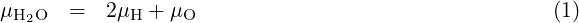
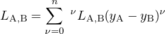
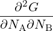
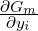
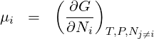
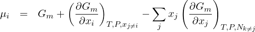
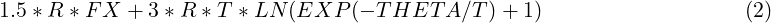

User Guide to the
OpenCalphad software package
version 7.0
DRAFT
Bo Sundman, November 14, 2026
This is not yet updated to all features of the new version.
Updates of OC User Guide
version 7, 2026-11-07 prerelease
version 6, 2026-10-30 last release including MQMQA with single anion
version 6, 2019-11-11 prerelease
version 5, 2018-09-19 first use of hypertargets
version 4, 2016-10-06
version 3, 2016-01-01
Earlier versions of OC had no User Guide
This page intentionally blank
The development of the OpenCalphad (OC) sofware was started by a small group of dedicated scientists who wanted to provide an open source multicomponent thermodynamic software. It aims to provide a free high quality software for thermodynamic calculations, including property and phase diagrams, assessment of databases and a thermodynamic library for simulations for inorganic systems i.e. gases. liquids, alloys and other materials using many different kinds of models for the phases. There are three basic papers published about OC [1, 2, 3]. General information about thermodynamic models, calculations and assessments based on the Calphad technique can be found in the book by Lukas et al [4]. This software is provided free with a GNU GPL license.
In OC there is also a framework to store different kinds of materials properties that depend on temperature, pressure and composition when such properties are related to the phases of the system and used in simulations as described in [5]. The OC software can also be used to assess model parameters for such properties from experimental and theoretical values.
Complimentary (and maybe sometimes contradictory, I am not perfect) information about the OC software can be found in getting-started.pdf, news-oc7.pdf and the other parts of the OC documentation.
The introduction above was written more than 5 years ago and although the software has developed a bit this documentation has not been updated until now, 2026. But there are not many changes in the exiting software except that the liquid salt model known as the Modified Quasichemical Model in the Quadruplet Approximation (MQMQA) has been added, at least partially. See the section 2.11 and the papers [12, 13] for more information about this model.
The different parts of the OC software are documented separately for each module: thermodynamic models (GTP), equilibrium calculations (HMS), step/map/plot routines (SMP) and the application software interface (OCASI/TQ). With OC version 6 the old utility package metlib, originally written in F77, has been converted completely to the new Fortran standard and is included in the documentation. The documentation of the assessment module is not finished.
OC uses the free numerics packages LAPACK and BLAS and two routines from MINPACK [6], LMDIF and HYBRD developed at Argonne 1980. LMDIF is a least square minimizer used for assessments and HYBRD [6] solves systems of non-linear equations needed to calculate T0 and paraequilibria. For graphics OC generates a command file which can be plotted with the free GNUPLOT [7] software. If GNUPLOT is properly installed GNUPLOT is invoked automatically by OC.
OC is operated by commands typed by the user or read from a macro file. The command monitor has a menu of command and each of these usually has sub-menus and finally some questions may be asked like phase names, a value or an expression. In most cases a default answer is provided which can be selected by just pressing the RETURN key or by typing a comma, “,”, on the same line as the command. At all levels the user should be able to type a ? and get some help, usually an extract from this manual, sometimes just a menu or examples of answers.
A command line interface is superiour when it comes to enter complex equilibrium conditions for example to calculate the minimum of a liquidus line defined by the condition “x(liq,cr)-x(bcc,cr)=0” in the Fe-Cr system. To follow a second order transition one can set the difference between the site fractions of the same element, for example “y(bcc-B2,Al)-y(bcc-B2,Al#2)=0.01” as condition.
For the menu commands a single ? will just display the menu, in order to obtain the User Guide type two, ??.
If you prefer a graphical user interface (GUI) there is at least two independent efforts to provide a GUI to OC.
On Windows the OS provides history and on-line editing of commands but on Linux and other OS this has to be provided by the software itself. Thus a C routine with an iso-C interface written by Urban S Jost (2009) copied from http://www.urbanjost.altervista.org/LIBRARY/libCLI/Getkey/getkey.html has been added and there is a seperate documentation of this if you want to change anything.
The command history is saved inside OC and by typing “upparrow” (normally ctrl-P but it can be different on different terminals) earlier command can be retrieved and also edited.
To open a file for reading or saving one need a file browser and from OC version 5.018 I have included a routine “TINYFILEDIALOGS” developed by Guillaume Vareille (2014-2018) available at http://tinyfiledialogs.sourceforge.net. This will open a popup window to open a file (for a macro, a database or to save a calculation). In this window you can browse your directories to find the file.
This has some consequencies for editing your macro files which you should be aware of and which are explained below.
You can turn off the open file popup window feature with the command set advanced open_popup_off Y. You can turn it on again with the same command finishing with anything but Y.
The directory where you start the session with OC is called the “working directory”. On a linux system you can find this directory by typing “pwd” before starting OC (or if you type @pwd inside OC). On a Windows system you can see the working directory and its files if you type @dir inside OC.
If you open a macro file with commands using the working directory will automatically be set to this directory. Thus you can read database or other macro files just by typing the file name, although sometimes it has to be prefixed by “./” .
When the popup window is opened the directories and files matching the “filter” in the working directory should be listed. If not you can select a directory inside the popup window. The filter when open a macro file is “OCM” and when opening a database file it is “TDB” which means only files with these extensions are listed. You can change the directory in the popup window to select the file you want and you can read a file with another extension. OC will save internally the directory where you start the macro.
Inside a macro file you normally read a TDB file and if you do not specify the name of the database on the same line as the command read tdb the popup window will open so you can specify the file in this window.
Normally you know which database you want to use inside the macro and if you give the file name on the same line as the commad: read tdb filename the popup window will not open and OC will search for the specified database file starting from the “working directory”. But if the database file is in the same directory as the macro file you MUST prefix “filename” with “./”, i.e. read tdb ./filename. You may include directories in “filename”, (including “../” to go to the directory above). OC will replace the “./” by the directory where you started the macro or prefix “../” by this directory.
In the macro file you can give the full path to the file to be opened but that is rather clumsy.
When you open a file for write inside a macro, like output from a plot, you can also specify the file name in the command prefixed by “./” if you want to save the file on the same directory as the macro file. Otherwise it will be saved at the working directory.
If you use the switch “/output=” or “/append=” after a command to redirect output from the command you can also use the popup window to specify the file name or use a filename with or without the prefix “./”. The default extension in this case is “DAT”.
Opening files on different directories can be complicated inside OC. For example during assessments you may use many different files for generating graphics and unformatted save files. Preferably you keep all of these on the same directory.
You are welcome to provide feedback on this popup feature and other parts of the user interface.
A recent feature added to OC is providing on-line help using a browser window where this user guide is available as a searchable HMTL file.
Whenever the user wants an explation of a question the OC software asks he can type a ? and the OC software will open a separate browser window positioned at the relevant text in the user guide. You can then search the whole user guide for related information.
Whenever the user types ? at a menu level just the menu will be displayed but if you type ?? the user guide will be opened at the relevant menu text with additional explanations.
This feature is new and is still under development. Feedback is helpful. It can be turned off (or on again) by the command set advanced help_popup_off y in section 26.1.5.
For installation of the help system please read the installation guide to create an environment variable OCHOME with a link to the directory with the help file.
The OC program will look for an environment variable called OCHOME and if it finds this it will look for a file start.OCM which will be executed before the user gets control. This can typically be useful to set some variables like the plot terminals, see section 10.8. If there is no OCHOME environment variable the current “working directory” will be searched.
The ochelp.tex and ochelp.html file should be copied from the directory “manual” in the installation directory to this OCHOME directory.
The macro command is very useful for preparing complex calculations and to remember how you did them. A macro file is simplest to create staring from a log file (created by the set log command). See the macros directory for examples.
After a macro command the popup window will allow you to search for the file on all your directories unless you type the name of the file on the same line. In the latter case the macro file must be on you “working directory”, see section 2.1.2
When you open files, such as databases, inside a macro file and you type the file name on the same line as the command as read tdb ./steel1, you must prefix the file name, “steel1” with “./” if the tdb file is on the same directory as the macro file. If your command line is just read tdb the popup window will be activated and you can specify the file there.
If you open another macro file inside a macro (typically when you do assessments) you must also prefix the name of the macro with “./” unless you want to select the macro using the popup window.
2.1.5.1 Comments, stops and questions in macro files
It is useful to insert comments in the macro file to explain what it doing. A line starting with “@$” is a comment and will be ignored by the OC software.
You can insert stops in the macro file with “@&” at the beginning of a line. This can be useful to have time to inspect the output. The macro continues after pressing the ENTER/RETURN key. Depending on the graphical driver you use the program will normally pause after each plot and you must click on the graphical window to continue.
You can also, inside the macro, ask the user for values needed for the calculations. For example if you have a complicated calculation you would like to use several times with different values of the compositions or temperature you can, instead of editing the macro each time, insert questions in the macro. The macro will then stop and ask the user to input that value from the keyboard before continuing. In the macro file you can ask for the condition on the temperature in this way:
@$ Ask user for the condition on the T set cond T @?Input-new-temperature
When the macro comes to this point the program will write the text “Input-new-temparature” on the screen and wait for user input. After the value has been typed on the keyboard and ENTER/RETURN pressed OC will set the value as the temperature and continue with the next command in the macro file.
There is no way to insert loops, jumps or conditions in the macro file.
A macro file should be terminated with the command set interactive which gives back control to the keyboard (or the calling macro file) otherwise the program may terminate at the end of the macro.
Macro files can be nested 5 levels deep.
OC has grown organically and although the basic concepts has been quite clear the implementations of several of these has become rather confusing. This will eventually require some cleaning up of the user interface.
A central part of any thermodynamic software is the modeling of the phases. A new PDB format for databases may help a little with the specification of the models. An attempt has been made in this version to clean up the way a model is specified and used. At present you must first ENTER the phase to give a name, basic model, sublattices and constituents. Then use the command amend to add magnetism, a disordered fraction set and/or use BCC/FCC permutations. Originally some of these things were set by the command set phase ... bit and that was not very clear.
Some computational options like for the grid minimizer are still set with several different commands. It is useful for the developers to have some feedback from users to organize this better.
There are many symbols and names used in this package. A symbol or name MUST start with a letter A-Z. It usually can contain digits and the underscore character after the initial letter. All names are CASE INSENSITIVE, i.e. fe, FE, fE and Fe is the same. Some special symbols are used:
/- is used to denote the electron. /+ or /- -1 can be used for a positive charge.
* can be used to mean “all” or “all stable”.
# are used to identify composition sets after a phase name or sublattice after a constituent name. It is also used as wildcard to obtain the DGM of all phases including metastable ones.
& are used in some parameter identifiers to specify the constituent for the parameter, like for mobilities, the mobility of Fe in the BCC phase is denoted MQ&FE(BCC).
A name of an element is one or two characters, a species maximum 24 characters (note that a species name does not have to be its stoichiometric formula). A phase name is 24 characters but can also have a pre- and suffix 4 characters long and possibly a composition set number after a hash symbol, #.
State variable symbols and TP-fun symbols can be 16 characters long. TP-funs are expressions used to describe the T and P dependence of model parameters.
For user input it is possible to use abbreviations of names but you must be careful with names that have the same abbreviation and avoid phase names that are abbreviations of another phase!
Much of the confusion using thermodynamics is due to the fact that the user has no clear idea of the terms in the title of this section. A strict definition used in OC is:
An element is from the periodic chart. The user can also enter fictitious elements.
A species is a molecularlike aggregate of elements with fixed ratios. It can also have a charge and be called an ion. The vacancy, representing an empty lattice site, is also a species.
The constituents of a phase is a subset of the species.
The set of components limits the composition of the system. By default the elements are the components but the user can enter any orthogonal set of species as components by a command, see section 5.3.
A system is defined by its components. Conditions on the amounts or chemical potentials can only be set for the components, not for any arbitrary species. But the chemical potential of a molecule is related to that of the elements at equilibrium. Thus one can use the relation:

to set a condition on a sum of chemical potential of the elements.
The phases can gave different models and sets of constituents to describe Long Range Ordering (LRO) and Short Range Orderng (SRO). Some phases can exist for a specific composition only or for a limited subset of the components of a system.
The MQMQA phase have a particular set of constituents called quadruplets. These are explained in section 2.11.2.
Many come across thermodynamic calculations the first time in chemistry writing chemical reactions. In such reactions the solid and liquid phases are usually treated as stoichiometric and only the gas can have several constituents. In the Calphad approach most phases are treated as solutions with variable composition but with different models for their Gibbs energy functions. But some phases can exist only for a specific or very restricted composition.
Each phase in a system has a name and a thermodynamic model and set of constituents, see section 2.3. The models are explained in a separate documentation. The phases can be entered interactivly or read from a database or a saved file together with the last calculation.
In some cases a phase can be stable with two ore more different compositions for example inside miscibility gaps or when the phase has order/disorder transitions. In such a case you use a composition set index to separate these. The composition set index is appended to the phase name preceeded by a hash “#” character, like liquid#2.
Composition sets can be created manually, see the command amend phase in section 5.11.4 or automatically by the grid minimizer or application software.
The phase tuple has been introduced to have a single index for both phases and composition sets in application software. The tuple index thus contain both the phase number and the composition set index. The array of tuple indices is updated internally whenever a new composition set is created or deleted.
In many cases you can use an asterix “*” as a name and this normally means “all”. For setting status of phases you can use the special “*S” for all suspended phase, “*D” for all dormant phases. If you plot the composition of a phase, such as x(liquid,*), values will be listed or plotted only in the range the liquid is stable.
When using “*” for output, for example NP(*) for the amount of all phases it means “all stable”. Thus to plot the driving force for metastable phases, see section 2.6.2, there is a special wildcard “#” which can be used in in DGM(#) for plotting the driving force for all metastable phases. The driving force, DGM, is also included in listing of results for all phases.
| Symbol | Id | Index | Normalizing | Meaning | |
| 1 | 2 | suffix “z” | |||
|
Intensive properties | |||||
| T | 1 | - | - | - | Temperature |
| P | 2 | - | - | - | Pressure |
| MU | 3 | component | -/phase | - | Chemical potential |
| AC | 4 | component | -/phase | - | Activity |
| LNAC | 5 | component | -/phase | - | LN(activity) = MU/RT |
| Extensive and normallized properties
| |||||
| U | 6 | -/phase#set | - | 0 | Internal energy for system |
| UM | 6 | -/phase#set | - | 1 | Internal energy per mole |
| UW | 6 | -/phase#set | - | 2 | Internal energy per mass |
| UV | 6 | -/phase#set | - | 3 | Internal energy per m3 |
| UF | 6 | phase#set | - | 4 | Internal energy per formula unit |
| Sz | 7z | -/phase#set | - | * | Entropy |
| Vz | 8z | -/phase#set | - | * | Volume |
| Hz | 9z | -/phase#set | - | * | Enthalpy |
| Az | 10z | -/phase#set | - | * | Helmholtz energy |
| Gz | 11z | -/phase#set | - | * | Gibbs energy |
| NPz | 12z | phase#set | - | * | Moles of phase |
| BPz | 13z | phase#set | - | * | Mass of phase |
| Qz | 14z | phase#set | - | * | Internal stability of phase |
| DGz | 15z | phase#set | - | * | Driving force of phase |
| Nz | 16z | -/phase#set/comp | -/comp | * | Moles of components |
| X | 17 | -/phase#set/comp | -/comp | 0 | Component mole fraction |
| X% | 17z | -/phase#set/comp | -/comp | 100 | Component mole per cent |
| Bz | 18z | -/phase#set/comp | -/comp | * | Mass of components |
| W | 19 | -/phase#set/comp | -/comp | 0 | Component mass fraction |
| W% | 19z | -/phase#set/comp | -/comp | 100 | Component mass per cent |
| Y | 20 | phase#set | const#subl | - | Constituent fraction |
| Some model parameter identifiers
| |||||
| TC | - | phase#set | - | - | Curie temperature |
| BMAG | - | phase#set | - | - | Aver. Bohr magneton number |
| MQ&X | - | phase#set | constituent | - | Mobility of X |
| LNTH | - | phase#set | - | - | LN(Einstein temperature) |
A state variable in a thermodynamic system has a value which at equilibrium is independent of the way the system has reach its current state, it depends only on its current state. All state variables available in OC are listed in Table 1. They are used to set conditions and to obtain results from an equilibrium calculation. It is possible to use state variables values also when the system is close to the equilibrium state for example when simulating a phase transformation.
One has to be careful with the normalizing suffix, thus H means the enthalpy of a system for its current size. HM is the enthalpy for the current system divided by the number of moles of atoms in of the system. This is one can expect but one may be surprised that H(phase) is the enthalpy of “phase” for the current amount of moles of atoms of the phase, which is zero if the phase is not stable. To obtain the value of the enthalpy of “phase” independently of its current amount one must use HM(phase), the enthalpy per mole of atoms in the phase.
The value of a state variable also depend on the reference states of the elements. The user may define this for each element with a command, see section 2.10. The default refernce state is the stable state of the elements at 298.15 K and 1 bar, called SER. Whenever necessary this is indicated by an final suffix “S”, for example ACS(C) indicate the activity of C using the reference state SER whereas AC(C) is always be the activity relative the current reference state, either the default or that set by the user.
If all elements have the same phase as reference then the integral properties will also be refered to that phase, they wll represent an “excess”. If the elements in a system have different reference phases the integral value of the state variable will normally be relative to SER because anything else would be meaningless.
Most state variables have a welldefined thermodynamic meaning but the driving force, DGM(phase), is a property related to the stability of the phase at an equilibrium. All stable phases are on a common tangent planne of chemical potentials and have DGM=0. For a metastable phase the value of the DGM variable is the distance in Gibbs energy (normallized by dividing it by the value of RT) between the stable tangent plane and the point on the Gibbs energy surface of the metastable phase that is closest to the tangent plane of the stable phases. DGM is negative for a metastable phase and if is close to zero it means the phase is close to become stable. The only case when a phase can have positive DGM is when it has the dormant status and it means the phase would be stable if its status is changed to be entered.
The internal stability of a phase, Q(phase), is calculated using the second derivatives of the Gibbs energy at a specific composition and T, i.e. the Darken stability matrix, see section 7.8.3. If Q(phase) is negative the phase composition is inside a miscibility gap.
In Table 1 all first derivatives of the Gibbs energy are included (S,V,μ) but no second dervatives. However, when calculating the equilibrum all second derivatives of G are calculated and by suitable arrangements one can obtain properties such as the heat capacity, by entering a symbol with the expression “HM.T”, for the partial derivative of the enthalpy per mole, HM, with respect to T. One can calculate the heat capacity for a phase by “HM(gas).T”. At present only derivatives with respect to T is implemented. See section 10.17
The use of thermodynamic software depend on databases with assessed model parameters for phases and elements. With the OC software one can make assessments of such model parameters using experimental and theoretical data, see section 2.16.5. However, this user guide does not describe the construction of such databases or how one can obtain them.
There are many thermodynamic databases available but their quality varies a lot. All databases have a limited set of components and composition range. The commercial databases are normally well assessed but may be expensive and usually encrypted and cannot be used with OC. For some common materials such as steels and aluminium alloys there are reasonable free databases with 5-10 elements but with very limited composition range. Be careful and always check a calculated result by an experiment.
All data is organized relative to a phase and the phase is identified by a name. Each phase can have a different model for the composition dependence but the way to enter model parameters is the same for all models. However, the meaning of a model parameter will depend on the model of the phase.
Many types of data can be stored as explained in the section on parameter identifiers. The parameter also has a constituent specification explained in the constituent array section and possibly a degree, the meaning of which is model dependent and a bibliographic reference.
The basic syntax of a parameter is
“identifier” ( “phase name” , “constituent array” ; “degree” ) “expression” “bibl.ref.”
These parts are explained in more detail below. The MQMQA model has some special features explained in section 2.11.4.
The OC thermodynamic package can handle any phase property that depend on T,P and the constitution of the phase using the models implemented. It is easy to extend the number of properties by declaring property identifiers in the source code. If the parameters should have an influence on the Gibbs energy (like the Curie temperature) or a diffusion coefficient (like the mobility) the necessary code to calculate this must be added.
A list of the model parameter identifiers as shown in Table 2 can be obtained by the command list model-param-id
Indx Ident T P Specification Status Note 1 G T P 0 Energy 2 TC - P 2 Combined Curie/Neel T 3 BMAG - - 1 Average Bohr magneton numb 4 CTA - P 2 Curie temperature 5 NTA - P 2 Neel temperature 6 IBM - P &<constituent#sublattice>; 12 Individual Bohr magneton num 7 LNTH - P 2 Einstein temperature 8 V0 - - 1 Volume at T0, P0 9 VA T - 4 Thermal expansion 10 VB T P 0 Bulk modulus 11 VC T P 0 Alternative volume parameter 12 VS T P 0 Diffusion volume parameter 13 MQ T P &<constituent#sublattice>; 10 Mobility activation energy 14 MF T P &<constituent#sublattice>; 10 RT*ln(mobility freq.fact.) 15 MG T P &<constituent#sublattice>; 10 Magnetic mobility factor 16 G2 T P 0 Liquid two state parameter 17 THT2 - P 2 Smooth step function T 18 DCP2 - P 2 Smooth step function value 19 LPX T P 0 Lattice param X axis 20 LPY T P 0 Lattice param Y axis 21 LPZ T P 0 Lattice param Z axis 22 LPTH T P 0 Lattice angle TH 23 EC11 T P 0 Elastic const C11 24 EC12 T P 0 Elastic const C12 25 EC44 T P 0 Elastic const C44 26 UQT T P &<constituent#sublattice>; 10 UNIQUAC residual parameter 27 RHO T P 0 Electric resistivity 28 VISC T P 0 Viscosity 29 LAMB T P 0 Thermal conductivity 30 HMVA T P 0 Enthalpy of vacancy form. 31 TSCH - P 2 Schottky anomaly T 32 CSCH - P 2 Schottky anomaly Cp/R. 33 NONE T P 0 Unused
Several of these identifiers have no supporting software implemented, this is an ongoing project. The columns T P indicate if the parameter may depend on T or P. Some identifiers require additional specification of the constituent and sublattice, like the mobility of a constituent. Currently it is not yet clear if mobilities should depend on the sublattice or not but the notation allows that.
A slightly more detailed explanation of the identifiers are:
G, the Gibbs energy parameter for an endmember or an interaction. G(LIQUID,FE;0) is the Gibbs energy for pure liquid Fe. Note that the parameter will be used also below the melting temperature of Fe for a liquid phase containing Fe. G(LIQUID,CR,FE;0) is the regular parameter for Cr and Fe in the liquid.
TC, a parameter for the critical temperature for ferro or antiferro magnetic ordering for use in the Inden-Hillert model.
BMAG, a parameter for the average Bohr magneton number for use in the Inden-Hillert model.
CTA, a parameter for the Curie temperature for ferromagnetic ordering for use in the Inden-Qing-Xiong model.
NTA, a parameter for the Neel temperature for antiferromagnetic ordering for use in the Inden-Qing-Xiong model.
IBM&C, a parameter for the individual Bohr magneton number for constituent C for use in the Inden-Qing-Xiong model. For example IBM&FE(BCC,FE) is the Bohr magneton number for BCC Fe. The identifier IBM&FE(BCC,CR) means the Bohr magneton number of a single Fe atom in BCC Cr. An identifier IBM&FE(BCC,CR,FE) can be used to decribe the composition dependence of the Bohr magneton number for Fe in BCC.
LNTH, a parameter for the logarithm of the Einstein temperature.
V0, a parameter for the volume at 298.15 K and 1 bar.
VA, a parameter for the integrated thermal expansion.
VB, a parameter for the Bulk modulus.
G2, a parameter for the two-state liquid model.
LAMB, a parameter for the thermal conductivity.
MQ&C, a parameter for the logarithm of the frequency factor of the mobility of constituent C.
MF&C, a parameter for the activition energy of the mobility of constituent C.
MG&C, a parameter for the magnetic factor of the mobility of constituent C.
THT2, The T for a smooth change of CP
DCP2, The value of the smooth change in J/mol
VISC, a parameter for the viscosity.
LPX, a parameter the lattice parameter in X direction.
LPY, a parameter the lattice parameter in Y direction.
LPZ, a parameter the lattice parameter in Z direction.
LPTH, a parameter the angle between lattice directions.
EC11, a parameter for the elastic constant C11.
EC12, a parameter for the elastic constant C12.
EC44, a parameter for the elastic constant C44.
UQT&C, a parameter for the UNIQUAC residual energy for species C
RHO, a parameter for the electrical resistivity.
HMVA, a parameter for the enthalpy of vacancy formation.
TSCH, the T for a Schottky anomaly.
CSCH, the Schottky anomaly ΔCP .
QCZ, the bond number in the FactSage quasichemical model.
The current value of any of these parameter identifiers can be obtaind by the command list state_variable or show using the identifier and appropriate phase and component specifiers, see section 16.19.
For details of the meaning of the model identifier refer to the model documentation. As already mentioned many of the identifiers, like the mobility, does not influence the Gibbs energy but as they depend on the T,P and constitution of the phase it is convenient to model them in the same way as the thermodynamic data.
A constituent array specifies one or more constituent in each sublattice. A constituent must be entered as a species with fixed stoichiometry. Between constituents in different sublattices you must give a colon, ”:”, between interacting constituents in the same sublattice you must give a comma, ”,” or a space. A constituent array with exactly one constituent in each sublattice is also called an “endmember” as it give the value for a “compound” with fixed stoichiometry. Constituent arrays with one or more interaction constituents describe the composition dependence of the property. Without such parameters the property will vary linearly between the endmembers.
If there are no sublattices, like in the gas, you just give the phase and the constituent
G(GAS,C1O2)
If no degree is specified it is assumed to be zero. For endmembers the degree must be zero but it may sometimes be useful to specify the zero in order to distinguish the parameter from the expression for the calculated value of the property, like the chemical potential of a component. In the gas phase you normally assumes there are no interactions but it is possible to add such parameters. For an fcc phase with 4 sublattice for ordering and one for interstitials an endmember parameter is
G(FCC,AL:NI:NI:NI:VA;0)
This would be the Gibbs energy of an fcc AL1NI3 ordered compound.
An interaction between vacancies and carbon in the austenite is
G(FCC,FE:C,VA;0)
For an interaction parameter you should always specify a degree but also in this case an omitted degree is interpreted as zero.
The main binary excess model implemented in OC is the symmetric binary Redlish-Kister method combined with the Muggianu ternary extrapolation. Other binary methods, such a polynomial or Legendre polynom can always be converted to a set of Redlich-Kister parameters.

where the degree, ν, of the interaction parameter is specified after a semicolon, L(phase,A,B;ν).
For ternary parameters and for reciprocal parameters the Hillert model for composition dependence is implemented, see [4].
You can store many different types of data in OC with different parameter identifier. Some of the parameters are not related to the thermodynamic properties but as they depend on the phase, T, P and composition it is convenient to store them together with the thermodynamic data. For example the mobility of Fe in BCC (including an empty interstitial sublattice) is specified as: MQ&FE(BCC,FE:VA).
An explanation of the identifiers implemented in OC can be found in section 2.9.1. The current list can be obtained by the command list model_param_id. All of them can be composition dependent. Some cannot depend on T or P or neither. Many kinds of the parameters are available but in some cases the software for the models to handle them are not implemented. The value of a model parameter can be obtained using list model_param_val or simply show. You must specify phase and endmember for the parameter.
From OC version 7 it will be possible to specify differnt ternary extrapolation methods for each a ternary subsystem of some phases. A ternary subsytem in a phase may be assigned a symmetric Kohler or asymmetric Toop ternary method together with the Redlich-Kister binary method as explained by Pelton [11]. See also sections 5.11.12 and 2.11.6.
The expression for a parameter can be a single value or a function of T and P. It must start with a low temperature limit, usually 298.15 K and must finish with a high temperature limit. These expressions as well as their first an second derivatives will be calculated by the TP-fun package. To simplify that there is a strict syntax for the expression. A term in the expression is
“numeric value” * “name of TP function” *T** “power” *P** “power”
You can construct very complex expression by referring to other functions. If “power” is zero the corresponding *T** or *P** can be omitted. If it is negative it must be surrounded by parenthesis like (-1). If it is unity the **1 can be skipped.
Several terms, seperated by signs, forms an expression and it must be terminated by a semicolon, “;”. After the semicolon there must be a high temperature limit or a breakpoint in temperature. A breakpoint must be followed by the letter “Y” and then a new expression for temperatures above the breakpoint.
It is the responsability of the database manager to ensure the expression is continuous at the breakpoint. If there are jumps in the value at a breakpoint strange things will happen when calculating equilibria.
After the high temperature limit the letter “N” must be given followed by a bibliographic reference for the parameter. Use the commands amend biblio or enter biblio to give the bibliographic reference.
The database manager should always add a bibliographic reference even if it is just his or her name and a date. This avoids people to mistake a value inspired by your experience for a carefully validated parameter.
A term can be used inside a natural logarithm, LN, or exponential, EXP. And the LN or EXP can be multiplied with a term. On the other hand you are not allowed to have any parenthesis, except around powers or arguments to LN and EXP. A valid expression is
298.15 -8856.94+157.48*T-26.908*T*LN(T)+.00189435*T**2 -1.47721E-06*T**3+139250*T**(-1); 2180 Y -34869.344+344.18*T-50*T*LN(T)-2.88526E+32*T**(-9); 6000 N 91Din
where 91Din is the bibliographic reference to the SGTE unary database.
The values of most thermodynamic data must have a defined reference state. By default the reference state for the components is SER (Stable Element Reference) which is the stable state of the element at 298.15 K and 1 bar. (NOTE: the default reference state is defined by the database but today almost all databases have SER as reference state.)
For each component (also for other components than the elements) you can specify a phase at a given temperature and pressure as reference state, see section 26.19. The phase must exist for the component as pure.
A state variable like the chemical potential, MU(O), will refer to the user defined reference state if set. To obtain the value for the SER state you can use a suffix S, i.e. MUS(O) to obtain the chemical potential refered to SER. All state variables are listed in Table 1.
Note that the value of integral properties like Gibbs energy, G, enthalpy, H, etc. may have mixed reference states unless all components have the same phase as reference state. In order to have the enthalpy of mixing of a phase all components must have that phase as reference state. For the volume, V , SER is always used as reference state unless all components have the same reference state.
The MQMQA model developed by Pelton is quite different from the other models implemented in OpenCalphad. In this section the main differences are explained. The same commands to set conditions and calculate diagrams are used but the constituents, i.e. the internal variables used in the decription of its Gibbs energy include many derived or hypothetical variables.
In a quasichemical model one tries to describe the Short Range Ordering (SRO) of the liquid or solid by introducing species of two or more elements mixing with the original elements. The configurational entropy expression approximates the ordering of the fraction of the elements in the SRO species with the original elements.
The basic constituent variables are the quadruplets which are neutral clusters with one or two cations and one or two anions. The stoichiometry of the quadruplets is related to the assumption that there are 6 bonds between each atom. A quadruplet is written as x_ij if there a single anion or x_ABxy when there are several anion.
In some cases the cations and anions are separated by a slash, “/” for example in MgNa/ClF representing a species with the two cations Mg and Na and the two aniond Cl and F.
An element can be present with several sifferent charges in the MQMQA model. In OC this is sometimes represented by a Q in the name of the species for the constituent, for example UQ3/Cl representing tri-valent U. Some elements are also “dimers” in a quadruplet such as U2/Cl. In OC the actual stoichiometric content of the species is defined in the SPECIES keyword. In listings only the name of the species is used.
The MQMQA model used several additional compostion variables, all of which are calculated from the current set of quadruplets. Note that summing these variables do not always fulfill the mass balance conditions.
Please read the paper by Pelton et al.
In OpenCalphad there is one endmember parameter for each quadruplet fraction in the MQMQA model. This parameter represent the Gibbs energy of formation of the quadruplet in the liquid relative to the reference state of the elemets. This is a slight difference to the original implementation in FactSage where only PAIR quadruplets with a single anion and a single cation are referenced to the reference state of the elements. In FactSage (and the DAT file used by FactSage) a “MIXED” quadruplet with two cations and/or two anions can have zero Gibbs energy of formation because its reference energy is calculated from the PAIR quadruplets with these cations and anions.
The parameter for a binary excess Gibbs energy is multiplied with the mixed quadruplet for the binary and a power series of one or two more constituent variables. These constituent variables can be of several different types and are also depending on any asymmetric relations in the system as a whole.
In a ternary system there can be 3 separate ternary excess parameters because it is considered to be a modification of the binary excess. Luckily there are few cases with that.
And happily there are no quaternary or higher order parameters in the current MQMQA model except related to the quadruplet, AB/xy
The excess model is complicated and strange.
In each ternay subsystem one can specify an asymmetric relation between the 3 elements. This affects the fraction variables used to calculate the contribution to the Gibbs energy from the model parameters. The asymmetry is normally set when reading the database but can also be AMENDed interactively.
The basic application of OC is to calculate the equilibrium of a system as described in section 7.3. The user can specifying the external conditions like T,P and the composition, see section 7.3.. The minimizing algorithm [2] use Lagrangian multiplier so many different sets of state variables can be used for specifying the external conditions. Each condition is set separately and it is possible to extract phase amounts and compositions after the calculation. By changing the status of the phases it is possible to calculate metastable state.
In order to do any calculation the user must provide a database with the model parameters for his system or enter these manually.
The conditions can also be set using the command set_input_amount, see section 26.9.
A property diagram is calculate with the step command, see section 28. First you must set conditions to calculate a single equilibrium and then set set one of the conditions as an axis. After the step command, you can plot how any state variable varies with the selected axis variable. See the section 21 and the OC macros examples.
A phase diagram show the regions of different sets of stable phases in a system. It can have two or more axis variables, in OC the maximum number of axis is two at present. As for property diagrams you must first calculate a single equilibrium and then select two conditions as axis variables. The command map, see section 18, will then trace the lines in your systems where the set of stable phases changes. There is no limit on the number of components for a phase diagram calculation.
After calculating a diagram you can plot it with many different types of axis, see section 21 and the OC macros guide.
Thermodynamics is essential to simulate phase transformations but requires good understanding also of the kinetics such as diffusion and kinetcs. For such applications OC has an Appication Software Interface (OCASI) with subroutines to calculate local driving forces and chemical potentials in various parts of a sample as described in [3, 5]. However, there are a few cases when one can simplify the kinetics sufficently to use the facilities of OC directly.
In a Scheil-Gulliver solidification simulation the diffusion in the solid phases are ignored and the liquid is considered as homogeneous. That is a realistic model for the interdendric reqion during a normal solidification. It can be calculated with a STEP calculation by using small time steps and modify the overall composition to be that of the liquid after each step. The solid formed is removed from the system. In such a simulation the liquid will be stable until it reaches an invariant equilibrium, usually very far from its initital composition, see section 28.6.
In some alloys, most particularly in steels, there are fast diffusing elements such as C or N which can maintain a constant chemical potential during the whole transformation, and thus change their composition in different phases. The other alloying elements may transform to a new phase without changing their fractions. This can be modelled as a paraequilibrium or a “No Partitioning Local Equilibrium” (NPLE) situation and it requires no kinetic data. In OC the CALCUALATE or STEP PARAEQUILIBRIUM simulates such a transformation, see sections 7.7, 28.4.
The T0 point, line or rather “hypersurface” between two phases are defined by T where the Gibbs energy of the two phases are the same. Such a point is the limit of a diffusionless transformation of one phase to the other and it is useful to understand for example the martensite transformation. How to calculate the “Tzero” point or line are explaned in sections 7.13 and 28.8.
One of the important uses of the OC software is to assess model parameters in the phases of a system using experimental and theoretical data. This is done by recalculating the experimental data from the model and by varying the model parameters a least square routine, LMDIF developed at Argonne National Lab in 1981, is used to find the best set.
Assessments are a very difficult procedure as you must also take into account the extrapolations of the model outside the range of experimental data. So called “First Principles Calculations” or the somewhat simpler “Density Functional Theory” (DFT) which are based on the electronic structure of the elements can provide information for metastable as well as for the stable state. But you must be careful that the result from such calculations does not represent a mechanically unstable state with imaginary phonon frequencies.
Experimental data can be direct measurements of thermodynamic data like enthalpies, chemical potentials, heat capacities, activities, etc but very important are also measurements of phase diagrams, solubilities etc because they are also related to the equilibrium state.
There are several commands related to the assessment procedure in OC but during the assessment you will also use the basic facilities to calculate equilibria for different kinds of conditions as well as many different kinds of diagrams to verify the results.
The command enter optimize_coeff”, see section 10.11, creates symbols A00 up to A99 that can be used as coefficients in the thermodynamic model parameters. Maximum number of coefficients are 100.
The elements, species and phases with their appropriate models are entered using the appropriate commands. Normally this is on a macro file in order to have proper documentation. Keep also in mind that an assessment is often revised after a few years when new data become available or you find that the extrapolations of an assessment to a higher order system is not reasonable.
The model parameters are entered using “enter parameter”, see section 10.12 or “enter tpfun”, see section 10.18 as many parameters may share some properties and a TP-function can be used in several parameters. The optimizing coefficents A00 to A99 with different T and P dependence can be used instead of numerical values as their values should be assessed.
This is done either by entering single equlibria with conditions and in addition using the command enter experiment, see section 10.7 where the experimental data is given with an uncertainty. Each equilibrium with an experiment is given a unique name.
Often there are tables with values and instead of entering each of them there is a command enter many_equilibria, see section 10.9 with a simplified but limited syntax.
When all equilibria with experiental data has been entered you have to give the command set range, see section 26.18 to give the first and last equilibrium number that should be used in the assessment. If necessary this range can be extended during the assessment.
All the experimental data should also be entered as a mcro file to keep a documentation.
Any time during an assessment it is possible to save the values of all assessed parameters and the calculated experimental equilibria by the command save unform filename, see section 24.7. With this command the data inside OC will be written as an unformatted Fortran file and this can be saved and later read back into the OC software by the command read unfomatted filename, see section 23.7. If these commands are inside a macro file use a prefix “./” to the filename with to read and write files on the same directory as the macro file.
These unformatted files are very convenient but beware that they may not be portable to other operating systems or even other versions of OC compiled with different Fortran compilers. It may change in future releases of the OC software. Thus keep printouts and macro files also if you later want to make modifications.
There are many decisions to make during the assessment and a general description how to perform an assessment can be found in the book by Lukas et al [4]. It is never possible to try to assess all parameters using all experiments in a single step. Normally the user selects different sets of experimental data by the set weight command, see section 26.26 and fits a few model parameters to these using the command set variable-coeff, see section 26.24. This can typically an enthalpy of mixing or a heat capacity function for a compound.
The command to run the least square fit is optimize followed by the maximum number of iterations, see section 20. If zero is given a single loop is made through all equilibria with nonzero weights within the specified range is made. It is also possible to use the command calculate all, see section 7.1, to calculate all non-zero weight equilibria. With the latter command you can turn on the grid minimizer, in the optimize command the grid minimizer is always turned off.
When the optimize command is given with nonzero maximum there will be output on the screen at regular intervals giving the current values of the optimizing coefficients and the value of the sum of squares. When the oprimization is finished there will also be a listing of the errors for all experiments.
With the command list opt short, see section 16.13.8, the current values of the optimizing coefficients and all equiliria with the experimental data is listed together with the sum of squares. New selection of equilibria or weights can be made and the values obtained for the optimizing coefficients must also be reasonable but to know what is reasonable is not always easy. These steps are repeated until the user is satisfied or exhausted.
Macro files to calculate and plot of the calculated properties overlayed with the experimental data should be preoared and run regularly as just looking at numbers is not sufficient.
At a later stage solubilities and phase diagram data are used but in many cases reasonable guesses of the start values of model parameters must be made to be able to calculate the equilibrium with the experiment. Great care must be taken that the calculated equilibria for the inital model parameters are reasonably close to the experimental. Parts of the experimental phase diagram may have to be assessed separately and the metastable extrapolations of the different phases checked.
Sometimes during an assessment a phase appears in a region where it should not be stable. Typically this may happen if a phase is stable only on a limited composition range. Additional fictitious experimental data may have to be added to suppress this. Including an experiment for the phase requiring that its driving force (DGM value) is negative at a composition it should not be stable can be a useful method.
At the end the assessment should be written up and published.
There is a separate guide for using OpenCalphad Application Interface (OCASI) in application software. For such cases it is convenient to have the source code which can be compiled together with the applications software. A special feature is also the possibility to use OpenMP to calculate in parallel.
The commands in alphabetical order as listed with the ?. The commands with an * has subcommands.
| ABOUT | EXIT | MAP | SELECT * |
| AMEND * | FIN | NEW | SET * |
| BACK | HELP | OPTIMIZE | SHOW |
| CALCULATE * | HPCALC | PLOT * | STEP * |
| DEBUG * | INFORMATION * | QUIT | |
| DELETE * | LIST * | READ * | |
| ENTER * | MACRO | SAVE * | |
Many of the commands have “subcommands” and usually OC will provide a default answer (listed within slashes /default/) which is selected by pressing return. You can type commands, subcommands and other parameters (separated by a space) on the same line if you know the order.
To select a default answer when typing several commands and answers to questions (command arguments) on the same line, you can use a comma,“,” to select this. For example “l,,,” will list on the screen with the current list options.
Many commands will ask additional questions, all of which are not included in this guide but those which are will be shown in bold. Examples and references to other commands are sometimes in bold, sometimes in italics.
Whenever the program asks a question you do not understand you can type a question mark, “?”, to obtain help. If the online help system is correctly installed, see section 2.1.3, this will open a browser window with this manual and hopefully position the manual at the relevant part. You can browse the whole manual in this window if you need additional help.
There are some options that can be set for the whole session or for just a single command. The options are identified by a / in front like /output=myfile.dat.
An option must be specified directly after a command for example:
list /out=equil5 result 2
Only a few options are implemented.
/OUTPUT=file name open a file and write on it. Note that if you have popup windows enabled this will open unless you type the file name (with path) on the same line as the command. In a macro file must prefix the file name with “./” to have the output (or append) on the same directory as the macro file. See also section 2.1.2 and 2.1.5.
/APPEND=file name append output to a file, any previous content is kept.
/ALL apply for all.
/FORCE override normal restrictions.
/VERBOSE write information while executing.
/SILENT do not write anything except fatal error messages.
This is OpenCalphad (OC), a free software for thermodynamic calculations as described in B Sundman, U R Kattner, M Palumbo and S G Fries, Integrating Materials and Manuf. Innov. (2015) 4:1; B Sundman, X-G Lu and H Ohtani, Comp Mat Sci, Vol 101 (2015) 127-137 and B Sundman et al., Comp Mat Sci, Vol 125 (2016) 188-196
It is available for download at http://www.opencalphad.org or the sundmanbo/opencalphad repository at http://www.github.com
This software is protected by the GNU General Public License You may freely distribute copies as long as you also provide the source code and use the GNU GPL license also for your own additions and modifications.
The software is provided ”as is” without any warranty of any kind, either expressed or implied. The full license text is provided with the software or can be obtained from the Free Software Foundation http://www.fsf.org
Copyright 2011-2021, Bo Sundman, Gif sur Yvette, France. Contact person Bo Sundman, bo.sundman@gmail.com
Intended to allow changes of already entered data. Only some of the subcommands are implemented.
| ASSESSMENT_RESLT | EQUILBRIUM | PHASE | SPECIES |
| BIBLIOGRAPHY | GENERAL | QUIT | TPFUN-SYMBOL |
| COMPONENTS | LINES | REDUNDANT-SETS | |
| CONSTITUTION | OPTIMIZING-COEFS | SPECIES | |
| ELEMENT | PARAMETER | START-CONSTIT | |
The default selection is PHASE.
After assessing a set of parameters for a system each of these has a Relative Standard Deviation (RSD) listed in the result. Using this RSD it is possible to modify one parameter and recalculate how much all the other parameters should change due to this modification without rerunning the actual assessment.
This command allows to calculate such a change and it can be tested be reassessing the parameters using the experiments.
Reference identifier:
The text for bibliographic reference identifier can be amended. The reference identifier is CASE INsensitive.
Reference text, end with “;”:
The text for this reference will be set to the text supplied. It can be several lines terminated with a “;”
Give all new components:
By default the elements are the components. This command can set any orthogonal set of species as components. The number of components cannot be changed by this command. The new components must exist as species and be orthogonal. For example in the system Ca-O-Si one can define CaO SiO2 and O as components.
The components are important as you can only use components to specify compositions, such as x(cao)=.3 is possibly only if CaO is a component. See also set input-amount 26.9.
Note that when you have other components than the elements you may have negative mole fractions and phase amounts (but never negative mass).
The program will ask for a phase name and you can set the amount and constitution of the phase. This will be used as initial constitution for a calculation unless the grid minimizer is used.
Current (Y), default (D) or new (N) constitution:
Answer Y to keep current constituion, D to set a default constitution (if you have set such a constitution) or N to provide a new constitution.
Fraction of component:
You can specify a value between 0.0 and 1.0. The sum of all constituents must be unity, values below 0.0 or 1.0 are not allowed. If you want the fraction of a constituent the be 1.0-(all the other fractions) you can set its value to REST. Otherwise the last constituent is set to the “rest”.
The data for the element can be amended, not implemented yet.
Not sure what could be amended and anyway not implemented.
A number of general settings can be amended by the user:
The name of the system.
The level of the user (beginner, frequent user, expert). This may affect the behavior of the program (not implemented yet).
If global minimization is allowed or not.
If the grid minimizer is allowed to merge gridpoints in the same phase after global minimization.
If the grid minimizer can automatic create composition sets is allowed or not.
If redundant composition sets can be deleted automatically after an equilibrium calculaion.
Note that these and some other general feautures can also be changed by the command set bit global
After a step or MAP command has been executed it is possible to list all calculated point by the command list line or amend line. The latted allows you to exclude or include calculated lines from the plotting. To exclude individual point you can edit the GNUPLOT file, by default called “ocgnu.plt”
Only excluded? /Y/:
Sometimes a line may be excluded from plotting if there was an error while it was calculated. Answering Y will make it possble to restore such a line and also lines you have previously excluded.
Exclude this line? /N/:
For an included line you can exclude from the plot.
Include this line? /N/:
For an excluded lines you can include it in the plot.
The values of each optimizing coefficients, see section 26.18 can be rescaled (start values set to current values) or recovered (current values set to previous start values).
The possible parameters that can be amended depend on the model of the phase. By specifying a parameter you can change its expression.
This is not yet implemented you must use the command enter parameter to change the parameter expression.
You must first specify the phase name and then you can amend some of the properties of the phase:
If you want to amend something for a composition set you must specify the composition set number together with the phase name after a hash character (#) (like liquid#2).
Phase name:
You must specify the name of the phase you want to amend.
| ADDITION * | DEFAULT-CONSTIT | FCC-PERMUTATIONS | TERNARY-EXTRAPOL |
| AQUEUS-MODEL | DIFFUSION | QUASICHEM-MODEL | ASYMMETRIES |
| BCC-PERMUTATIONS | DISORDERED-FRACS | QUIT | |
| COMPOSITION-SET | FCC-CVM-TETRAHDR | REMOVE-COMPSETS | |
Additions are used to give a contribution to the Gibbs energy of a phase using more or less physically based model. Usually they require additional model parameters, see section refsc:paramid. The difference between addition and other things that can be amended may not always be very clear. The possible additions are
| ELASTIC-MODEL-1 | MAGNETIC-CONTRIB | SMOOTH-CP-STEP |
| GADDITION | QUIT | TWOSTATE-LIQUID |
| LOWT-CP-MODEL | SCHOTTKY-ANOMALY | VOLUME-MODEL1 |
BEWHERE! The OC software allows you to mix many types of additions for a phase but it is up to YOU as user to defend the physical reasons for this!
The theoretical equation for most additions usually gives the value per mole of atoms. As the Gibbs energy is calculated per mole formula unit of the phase in OC (as well as most thermodynamic software) the addition must be multiplied with the number of atoms per formula unit of the phase.
Some of the additions, for example mobilities, are for properties that does not contribute to the thermodynamics but which depend on the phase, T,P and phase constitution in the same way as the Gibbs energy and it is thus convenient to model and store the data together with the thermodynamic data.
5.11.1.1 amend phase ... addition Elastic_model_1
A contribution to the Gibbs energy due to elastic strain can be added. This also requires values of the elastic constants and lattice parameters, see section 2.9.1.
There is no code to calculate the elastic energy implemented yet.
5.11.1.2 amend phase ... addition Gaddition
You can add a constant value of the Gibbs energy to a phase in Joule per formula unit. This is a crude but simple way to implement a for example a nucleation barrier.
Addition to G in J/FU (formula units)/0/:
5.11.1.3 amend phase ... addition LowT_Cp_model
The Einstein model for heat capacities from 0 K has been implemented. It requires a value of the property Einstein T as listed in section 2.9.1.
5.11.1.4 amend phase ... addition Magnetic_contrib
The Inden-Hillert and the modified Inden-Qing-Xiong model for the magnetic contribution to the Gibbs energy can be set by this command This depends on model parameters describing the Curie and Neel temperatures and the Bohr magneton number, as listed in model parameters identifiers 2.9.1, for the phase.
You also must also enter model parameters for the constituents of the phase, see the documentation of the model or Lukas [4].
Antiferromagnetic factor:
The Qing-Xiong model is selected by giving zero (0) for the question about the anti-ferromagnetic factor. For the original Inden-Hillert model -3 is used for FCC and HCP whereas -1 is used for BCC.
The Inden-Hillert model is described in Lukas et al [4]. The Inden-Qing-Xiong modified model requires separate values of the Curie and Neel Temperatures and either an “effective” Bohr magneton number or individual Bohr magneton numbers for the constituents of the phase.
5.11.1.5 amend phase ... addition Quit
You did not really wanted to add any addition.
5.11.1.6 amend phase ... addition Schottky_anomaly
Some physical phenomena can create a “bump” in the heat capacity for a phase at a certain T and this addition can describe this. It uses two model parameter identifiers, TSCH and CSCH that may depend on the composition. TSCH specify the T for the anomaly and CSCH the maximum contribution to the heat capacity (J/mol/formula unit) divided by R, i.e. as a factor of the gas constant, R.
5.11.1.7 amend phase ... addition Smooth-Cp-step
The 3rd generation thermodynamic databases extrapolate to 0 K and require that the heat capacity is zero at 0 K. This means it is impossible to use T * ln(T) terms (and also negative powers of T-n) but there may be some physical phenomena that causes an incremental increase of the heat capacity at some temperature. Ignoring the physical reason for such an increase this “smooth_CP _step” addition will provide such this using two parameters, THT2 to specify T and DCP2 to specify the increement in heat capacity. DCP2 is a factor of R. It uses the same mathematical expression as the Einstein heat capacity function but has no enthalpy contribution.
5.11.1.8 amend phase ... addition Twostate-liquid
The two-state model for the hear capacity for the undercooled liquids can be added. It assumes a low T amorphous state modeled as an Einstein solid and requires an Einstein T. For the liquid transition it uses the model_parameter_ident bf G2, both of which are listed in section 2.9.1.
Is G2 composition dependent? /Y/:
G2 parameters are usually evaluated for thr pure elemenents. Using interaction parameters for the G2 parameter may create unexpected phenomena.
You must specify parameters for LNTH and G2 for all constituents of the phase and possibly also interaction parameters to specify the composition dependence.
The implementation of this addition is not finished.
A model with dilute configurational entropy. Not implemented yet.
This is intended for the 4 sublattice CEF model for BCC ordering. Due to crystallographic symmetry several model parameters must be identical such as
G(BCC,AL:FE:FE:FE)=G(BCC,FE:AL:FE:FE)=G(BCC,FE:FE:AL:FE)=G(BCC,FE:FE:FE:AL)
The command means that all permutated parameters can be entered only once and it affects the data storage and makes the calculation of the Gibbs energy slightly more efficient. It simplifies greatly the maintenance of the database as many duplicate parameters become redundant. The same applies for the FCC_permutations but the BCC tetrahedron is asymmetric which makes it a bit more complicated than the FCC. Both FCC and BCC can have a 5th sublattic with interstitials.
Each phase has by default a single composition set. If the same phase can exist as stable (or metastable) with two or more compositions (miscibility gaps or order/disorder transformations) you may have to amend the phase by creating additional composition sets.
Composition sets can also be created automatically by the grid minimizer during an equilibrium calculation. In such a case the composition set will have the suffix _AUTO,
Composition sets of a phase can be created and deleted. Phases with miscibility gaps or which can exist with different chemical ordering like A2 and B2 must be treated as different composition sets. You can specify a prefix and suffix for the composition set. Extra composition sets will always have a suffix #digit where digit is a number between 2 and 9. You cannot have more than 9 composition sets.
The composition set number is given after the phase name and preceeded by a hash character #. In the OCASI interface and some more cases phase tuples are used to identify a phase and a composition set by a single number. As composition sets can be created and deleted a phase tuple index for the 2nd or higher composition set may change between calculations.
In some cases it may be interesting to calculate metastable states inside miscibility gaps and you can prevent the automatic creation of composition sets by turning off the global minimazation using AMEND GENERAL or for an individual phase by SET PHASE ... BIT NO_AUTO_COMP_SET
The default constitution of a phase can be set. Unless the grid minimizer is used this will be used for the first calculation with the phase and sometimes if there are convergence problems. NOTE that if you want to specify a default constitution for the second or higher composition set of a phase you must specify the composition set with the phase name!
Depending on the minimizing software used the initial constitution can be important to find the correct equilibrium if the phase has ordering or a miscibility gap.
For each constituent you can specify a minimum > or maximum < fraction or give NONE if there are no default.
If a phase has miscibility gaps and you have created composition sets with default constitutions the grid minimizer will try to select the composition set with a composition closest to the default for a stable phase.
To temporarily set a new constitution of a phase use the command amend constitution <phase> or calculate phase ... .
This is to specify how the diffusion coefficient matrix should be calculated when simulating a phase transformation. Normally the mobilities for the constituents of the phase are read from the database but you may use different “depended” and “independent” constituents in the diffusion model and also some other factors. This command is intended for such use. It is not implemeted yet.
There is no intention that OC itself should simulate diffusion but as the diffusion coefficents are strongly dependent on the thermodynamic factor (the Darken stability matrix) which represent the second derivatives of the Gibbs energy it is convenient to include some properties used in a simulation in the thermodynamic software.
For phases with several sublattices the Gibbs energy of the phase can be divided into two sets of fractions where the second or “disordered” set have only one or two sublattices and the fractions on these represent the sum of fraction on some or all of the first or “ordered” set of sublattices.
There are two different ways to handle the disordered fraction set depending on the fact if the phase can be totally disordered. The latter is the case for phases like B2, L12 etc which can be totally disordered as BCC/A2 or FCC/A1. The calculation of the Gibbs energy in the latter cas will subracted the contribution from the ordered part when the phase is disordered, see for example Lukas et al [4].
This is particularly important to model the Gibbs energy for phases with ordering like FCC, BCC and HCP and for intermediate phases like SIGMA, MU etc.
This model is intended for the CVM tetrahedron model for FCC and HCP. Not implemented yet.
This is intended for the 4 sublattice CEF model for FCC ordering. Due to crystallographic symmetry several model parameters must be identical such as
G(FCC,AL:FE:FE:FE)=G(FCC,FE:AL:FE:FE)=G(FCC,FE:FE:AL:FE)=G(FCC,FE:FE:FE:AL)
Setting this means that unique model parameters can be entered only once, the software will take care of all permutations. HCP permutations are also handled with this command as the HCP tetrahedron model is identical to the FCC. There can be a 5th interstitial sublattice.
There are several quasichemical models for the liquid that only describes the short range ordering (SRO).
None of them are yet implemented.
Do not amend anything for the phase.
The default ternary extrapolation is the symmetric Muggianu method which uses the binary excess Gibbs energy closeset to the overall composition, see section 2.9.3. However, there is also a symmetric Kohler method and an ansymmetric Toop method which can be defined separately for each ternary. For this you must specity
Ternary extrapolation (K, T or Q to quit)
If you specify T for Toop you must specify the Toop constituent, othewise just any of the three constituents as the first constituent. After that you will be asked for
Second constituent: and
Third constituent
For each ternary subsystem in the phase this can be specified as exp�ained by Pelton [11]. Those subsystems not specified will use a Muggianu method, see section 2.9.3.
This effect of this command is not yet implemented.
For a phase with the MQMQA model you can change the extrapolation method of a ternary cation subsystem, see section 2.11.6. OC first lists the quadruplets and the ternary subsystems with their present asymmetry.
Index of ternary to modify (0=none)?: the index of the ternary in the list, 0 does nothing.
Do you want to remove asymmetry? /Y/: this is asked if the ternary is already asymmetric. Y makes it symmetric (Kohler).
Use 0, 1, 2 or 3: for a symmetric ternary give the position, 1, 2 or 3, of the Toop cation in the list of the three cations. 0 makes no change.
Verbose? /N/: Y lists details of how the asymmetry is changed.
The new asymmetries are listed at the end.
The UNIQUAC model for polymers has been implemented and there is a macro “uniquac” showing how it can be used.
Do not amend anything (more).
Sometimes a large number of composition sets are created for certain phases and they may create trouble at later calculations. This command will set all metastable composition sets as dormant which may simplify convergence. A dormant compositon set may be set stable by the gridminimizer. It is also possible to delete composition sets but that is fragile and they may anyway be created again by the grid minimizer.
This is implemented for UNIQUAC species which has a specific volume and area used in the configurational entropy.
UNIQUAC surface area (q) /1/:
UNIQUAC segments (r) /1/:
These two parameters are necessary to calculate the configurational entropy of the UNIQUAC model.
Sometimes during an assessment a phase may obtain a completely wrong constitution. This typically happen when the phase has a miscibility gap and the composition set which has an experimental data is not the the right one. This can be corrected with this command which will copy the constitution from one equilibrium where it is correct to this equilibrium. This is simpler than modyfying the constitution directly because often several equilibria have the same problem.
For a symbol that is a constant this command means changing the value of symbol.
For some other symbols it is very special. It is intended for use in assessments to specify that a particular symbol must not be evaluated except when specified explicity, or when calculating a specific equilibrium.
The main problem is that a symbol can have an expression using another symbols and thus all symbols are normally evaluated whenever the value of a specific symbol is requested. This is to ensure that all symbol values are consistent and refer to the same calculated equilibrium. But in certain cases you may want to enter a symbol that is only evaluted when referenced explicity or at a specific equilibrium and this can be set with this command.
Symbols representing “dot derivatives”, for example “H.T” for the heat capacity are automatically set to be evaluated only when referenced explicitly. For all other symbols except constants OC will ask:
You can specify:
V for a symbol evaluated only when referenced explicitly
X for a symbol to be evaluated at a particular equilibrium
Please specify V or X /X/:
If you specify X you will be asked
Specify equilibrium number:
The X option is needed if you want to compare the value of a thermodynamic property, like the enthalpy, in two different equilibria. A symbol with the “X” attribute will be calculated in the specified equilibrium and this value can be used to calculate differences in other equilibria. For example, if you enter two symbols as:
enter symbol H298=HM;
enter symbol DH=HM-H298;
and amend symbol H298 symbol with X to be calculated in the equilibrium where T = 298. In other equilibria you can use:
experiment DH=5500:500
where DH will be the difference in enthalpy at the current equilibrium and that at T = 298. See also the command list symbol in section 16.20 and the explanation of the assessment procedure in section 2.16.5.
You can replace a TP function with a new expression. If it is a constant you can give a new value.
When you enter a TP function you can use already entered TP functions to calculate the value of the new TP function. With this amend command you can use functions that already use this function and thus create an infinite loop when calculating any TP function. Please be careful to avoid that.
Return back from the command monitor to the application program. In the OC software itself it means terminate the program.
Many different things can be calculated. The normal thing to calculate is equilibrium, the other things are special.
| ALL-EQUILIBRIA | GLOBAL-GRIDMIN | PHASE * | TRANSITION |
| BOSSES_METHOD | NO-GLOBAL | QUIT | TZERO-POINT |
| CAREFULLY | ONLY_GRIDMIN | SYMBOL | WITH-CHECK-AFTER |
| EQUILIBRIUM | PARAEQUILIBRIUM | TPFUN-SYMBOLS | LIQUID_EET |
Intended for the assessment procedure. Calculates all equilibria set by the command set range and with non-zero weight. It can also be used for other purposes, for example testing speed of the parallelization. The equilibria can be entered by the command enter many_equilib or several enter equilibrium.
This command can be looped to measure calculation times.
These two commands provide a fairly similar way to handle cases when there are convergence problems, in particulat for multicomponent systems. They require that the conditions are T,P and mass balance so the grid minimizer can be used. The difference is that after the gridminimizer has founc an initial set of stable phases all other phases are set as suspended and the iterative calculation will just use those phases selected by the gridminimizer, this should normally be successful. When this converged all suspended phases are set as dormant and a new iterative calculation is made. If no dormant phase has a positive driving force all phases are set as entered and the equilibrium has been calculated.
If one or more dormant phases have a positive driving force these will be set as entered one by one followed by an iterative calculation. The set of stable phases may change at each iterative calculation. When all dormant phases have negative driving force the equilibrium has been calculated.
If it fails it may be possible to identify the phase causing the convergence problems and maybe check its parameters or keep it suspended.
The normal command to calculate the equilibrium of a system for the current set of conditions and phase status. You can calculate a metastable equilibrium if some phases that should be stable have been set dormant or suspended or if automatic creation of composition sets is not allowed. If the conditions allow, the grid minimizer will be used to find start values unless the grid minimizer is explicitly turned of.
Before this command you must have entered thermodynamic data from a database or interactivly and used the command set condition, section 26.5, to set as many conditions as you have components plus two. The commands set status phase, section 26.21.3, and set input-amount, section 26.9 can also be used to set conditions.
For the first equilibrium calculation it is recommended to set conditions on T,P and the overall composition. Those conditions allow the grid minimizer to be used to find the best set of stable phases and their constitutions that should give the global minimum. However, the density of the grid may in some cases have to be increased to ensure that.
For later equilibria you can use a more flexible set of conditions, see section 26.5 and the gridminimizer may not be possible to use. In such a case OC will use the current set of stable phases and their constitution as start values.
If you want to check the calculation result when the grid minimiser could not be used you can use the command calculate with which will call the grid minimizer AFTER the equilibrium calculation (if it has converged) to check that it is indeed a global equilibrium.
Calculate with the global grid minimizer without using this result as a start point for the general minimizer. Used to debug the grid minimizer.
The Equi-Entropy T (EET) is the temperature where a solid phase has the same entropy as the liquid phase. This can be considered as the limit of stability of the solid phase even if its Gibbs energy may become lower than the Gibbs energy of the liquid at an even higher T, see also the EEC method in section 26.1.1. This command varies T or a composition to find the EET. It may fail if there is no EET for the phase.
You must have set conditions with zero degrees of freedom and you should have calculated an equilibrium close to the EET point already.
The liquid phase /LIQUID/: the name of the liquid phase.
The solid phase: the name of the solid phase.
OC lists the conditions.
Release condition number: the number of the condition, normally T, which is varied to find the EET.
The conditions are listed at the end with the value found for the released condition.
Calculate the equilibrium without using a global grid minimizer to generate start constitutions. The current equilibrium is used as start point. Can be quicker when only small changes of conditions made since previous calculation and this is how equilibria is calculated during STEP and MAP. It means no check of new miscibility gaps.
The paraequilibrium is described in section 2.15.2.
Matrix phase:
Note all phases except the matrix and growing phase should be suspended. You should provide name of the matrix phase
Growing phase:
Fast diffusing element:
The element that diffuse so fast that its chemical potential is the same in both phases. The other elements will have the same composition in both phases.
This is to calculate properties for a single phase independent of the current conditions except the values of T and P.
Phase name:
Amount of phase:
Current (Y), default (D) or new (N) constitution?
You must provide a phase name, the amount of the phase and if you should use the current constitution or enter a new.
The Gibbs energy of a phase and possible derivatives and some other things can be calculated. Mainly for debugging the implementation of models and testing the software.
| ALL-DERIVATIVES | DIFFUSION-COEFF | ONLY-G |
| CONSTITUTION-ADJ | G-AND-DGDY | |
The Gibbs energy, all T and P derivatives and all first and second derivatives with respect to constituents for the specified phase for current T,P are calculated and listed.
It is possible to loop this calculation to measure calculation times.
You will be asked to enter a new composition of the phase (the current constitution but the current is the default) and this command will then calculate the Gibbs energy and all chemical potentials for the given composition.
For a phase with sublattices the constitution of the phase will be adjusted to have the minimum Gibbs energy for the given composition.
It is useful when one or more components are parts of several constituents, for example in a gas and for phases with order/disorder transitions, in particular when the corresponding subroutine is used in simulations.
You will be asked to enter a new composition (default is current) of the phase and this command will then calculate the Darken stability matrix

for all components (see the documentation of the minimiser) and also diffusion coefficents when the diffusion module implemented and if there are any mobility values.
The Gibbs energy, all T and P derivatives and all first derivatives with respect to constituents for the specified phase for current T,P are calculated and listed.
IMPORTANT NOTE: The value of

is NOT the chemical potential, μi of component i. The understanding of thermodynamics is often poor and the user is reminded that the chemical potential of a component i is defined as:
where G is the integral Gibbs energy and all Ni are independent variables. When we model the molar Gibbs energy, Gm as a function of the constituent fractions, yi, these fractions are not independent and for a substitutional model, where yi = xi i.e. the mole fractions, the chemical potential is calculated from Gm using:

because the mole fractions, xi are not independent.
The Gibbs energy and all T and P derivatives calculated and listed for the specified phase for the current values of T,P.
If the phase has additions the Gibbs energy and its first derivatives and its second derivative of T of each addition are also listed
Do not calculate anything for the phase.
Do not calculate anything at all.
A state variable symbol or function is calculated using the results from the last equilibrium or grid minimizer calculation. It is used in particular for calculation of “dot derivatives” like H.T for the heat capacity.
If a wildcard, “*”, is given as name all symbols, except dot derivatives and symbols that must be specified explicity and those that should be calculated for another specified equilibria. See section 5.16.
All or a specific TPFUN symbol are calculated for current values of T and P. All parameters are also TPfuns prefixed by an underscore and they are also calculated.
After calculating an equilibrium you can calculate directly when a phase will appear or disappear by releasing one of the conditions you have specified. Typically this is used to calculate the melting temperature of an alloy or a solubility limit.
You must specify the phase name and the condition to be released. The program will set this phase as FIXED with zero amount and remove the condition you specified and calculate the equilibrium. The calculation may fail if the phase cannot be set stable with zero amount. If successful the removed condition will be set to the value calculated and the phase set stable with zero amount.
The T0 (or T zero) point is where two phases have the same Gibbs energy. It is a limit of diffusionless transformation between these phases. This can be calculated by varying T (or a composition) calculating the Gibbs energy for the two phases separatly using the same overall composition. NOTE in many cases there are no such point!
It is particularly interesting in steels to predict the martensite transformation which is normally some 100 K below the T0 point.
When the conditions does not allow for the gridminimizer to be used to find an initial set of phases this command can be used to call the gridminimizer after the iterative calculation. If the gridminimizer finds a phase that should be stable the equilibrium will be autmatically recalculated.
This type of calculations is regularly done durig STEP and MAP commands as such calculations normally have a phase as FIX which prevents use of the gridminimizer.
Several possibilities to trace calculations will be implemented in order to find errors but very little is working yet. This command is mainly for the software development.
| ASYMMETRIES | FREE-LISTS | PARAMETER-STRUCT | SYMBOL-VALUE |
| BOMBMATTA | GRID | SPECIES | TPFUN |
| BROWSER | MAP-STARTPOINTS | STOP-ON-ERROR | TRACE |
Intended to list the ternary asymmetries of an MQMQA phase. Not implemented.
Phase name:
To generate an X-Y table with composition with associated Gibbs energy values used for testing the grid minimizer.
Lists how the online help is installed: the OC home directory and how it was found (the environment variable OCHOME, the directory set when OC was installed or the default OCHOME in your home directory), which help files were found or are missing, and the browser used. Use it if the help does not work.
OC home directory: you can give another directory with the help files. This is for this run only. To change it permanently set the environment variable OCHOME. The browser can be changed by the command set advanced help.
Help target: to test the help give a command, for example List or List data. If it is in the help file OC opens the browser at it. As browsers distinguish upper and lower case OC uses the spelling in the help file. If it is not found OC lists the targets starting with the text you gave. RETURN skips the test.
Only for experts. At present it is used to test the MQMQA quadruplets, see section 8.7.
Quad index: the index of a quadruplet. OC lists the indices of the cations in it.
After an equilibrium calculation this command checks for all phases if there are gridpoints with a Gibbs energy closer to (or below) the plane defined by the chemical potentials. If so the composition of the phase is changed. This is used during step and map to update metastable phases which have become stuck in a local minimum.
An attempt to generate automatic startpoints for mapping a phase diagram.
The command debug free_lists is used at present to test the MQMQA quadruplets.
Quad index: the index of a quadruplet. OC lists the indices of the cations in it.
The command set advanced debug sets debug output for the MQMQA model. It lists the possible settings:
0 no debug 1 debug asymmetry 2 debug some more 3 debug reading TDB 4 debug parameter calculation 5 debug partial derivative calculation 6 verbose listing of asymmetries 7 debug ternary 8 debug enter ternary parameter
Set mqmqa debug?: give one of the numbers.
Set more debug?: you can give another number, 0 ends.
The output can be very long and is intended for the developers.
Lists the internal data structure of the parameters of one or more phases on a file. This is for the developers, the listing may be wrong or fail.
Output file: if no name is given the file parameter_output.DAT is used.
Phase: the name of a phase to list. OC asks for another phase until you give an empty line.
Lists the internal data of all species.
This is used to in macro files to test if the software calculates the same value of a symbol as when the macro was created. If not there is some new bug introduced (or a bug corrected?). After the symbol the expected value must be given and if the relative difference with the calculated value differ more than 10-6 the program will abort.
The program will stop at the command level after printing the error message if an error has occurred when using macro file. This should make it easier to to find errors occurring when running macro files.
The command switches this on and off, OC tells which.
Lists the internal data structure of the TP functions, converted to coefficients with powers of T.
Function index: /-1/: the index of a function, a negative value lists all.
Switches on or off some debug output.
Read TDB debug? /Y/: output when reading a TDB file.
HTML help? /Y/: output from the online help, for example if the help file is missing.
plotting? /N/: output from map and plot.
It is quite difficult to delete anything when the data structure is so involved. In many cases it may be better to enter the data again without the data that should be deleted. But there are a few things that must occationally be deleted.
| COMPOSITION_SET | EQUILIBRIUM | QUIT | STEP_MAP_RESULTS |
| ELEMENTS | PHASE | SPECIES | |
The first composition set of a phase cannot be deleted. Otherwise there is usually no problem unless several equilibria are entered because the composition set must be deleted in all equilibria. Composition sets are created and deleted during normal equilibrium calculations to detect miscibility gaps.
Dangerous and will probably never be implemented.
Dangerous but sometimes necessary. Done automatically at a second STEP or MAP command if you specifies to delete previous results.
Dangerous and will probably never be implemented.
Do not delete anything.
Not implemented yet and will probably never be.
This removes all equilibria and saved equilibria associated with STEP and MAP commands. It also deletes the axis.
At present STEP and MAP results can not be saved on an unformatted file. You have to delete step-map-results before saving on an unformatted file. It is similar to a PARROT flle in Thermo-Calc.
In most cases data will be read from a database file. But it is possible to enter all thermodynamic data interactively. This should normally start by entering all elements, then all species (the elements will automatically also be species) and then the phases.
A species have a fixed stoichiometry and possibly a charge. The species are the constituents of the phases.
A phase can have sublattices and constituents and also various additions like magnetic, low T heat capacity etc. which are specified by the amend command efter entering the phase (but normally before any model parameters for the phase are entered).
TPFUN symbols can be used to describe common parts of model parameters. See section 2.9.4 for an explation.
Each model parameter of a phase is entered separately. You may use TPFUN symbols which are already entered.
At present the multicomponent CEF model and the ionic 2-sublattice liquid model are the only basic models implemented. The CEF model includes as special cases the gas phase, regular solutions with Redlich-Kister Muggianu model and phases with up to 9 sublattices and ionic constituents. These models describe the basic configurational entropy contribution to the phase, models such as the magnetic contribution and low T heat capacity can be added to a phase with the amend command.
The enter command is also used to enter bibliographic data, equilibria for assessments and many other things.
The subcommands are:
| BIBLIOGRAPHY | EQUILIBRIUM | OPTIMIZE-COEFF | SPECIES |
| COMMENT | EXPERIMENT | PARAMETER | SYMBOL |
| CONSTITUTION | GNUPLOT-TERMINAL | PHASE | TPFUN-SYMBOL |
| COPY-OF-EQUILIB | MANY-EQUILIBRIA | PLOT-DATA | |
| ELEMENT | MATERIAL | QUIT | |
Each model parameter must have a bibliographic reference to ensure everyone can find the origin of its value. When entering a parameter a bibliographic reference symbol must be given and with this command you can give a full reference text for that, for example a published paper, a report or simply a reason for the value together with the date and your name so the origin of the parameter can be traced.
Reference identifier:
The text for bibliographic reference identifier can be amended. The reference identifier is case insensitive.
Reference text, end with “;”:
The text for this reference will be set to the text supplied. It can be several lines terminated with a “;”
A line of comment text can be added to the current equilibrium. It is particularly important when entering experimental data to give the reference to the data.
The constitution (fraction of all constituents) of a phase can be entered. This is a way to provide start values for an equilibrium calculation (when not using grid minimizer). To calculate the Gibbs energy for a specific phase at a specific constitution use the command calculate phase.
This command creates a copy of the current equilibrium with the same set of conditions and related data.
Must be used with care.
The data for an element is entered. It consists of is symbol, name, reference phase, mass, H298-H0 and S298.
The element symbol must be one or two letters, they will be converted to UPPER case automatically. The element name and reference phase is never used anywhere but included for completeness. The reference phase SER means the Stable Element Reference phase, the phase stable at 298.15 K and 1 bar. The mass is needed for input of amount (using state variable B), mass fractions or mass percent of the element.
The values of H298-H0 and S298 are never used for any calculation but included for completeness.
You can have several equilibria each with a unique set of conditions including phase status (dormant, suspended, fix or entered) but all with the same components and thermodynamic data. This is useful for compare different states, to simulate transformations and to assess model parameters as each experimental or theoretical information represented as an equilibrium.
All equilibria use the same thermodynamic data but they have an independent set of conditions and result data structure, also for TP functions and symbols, and they can be calculated in parallel.
After entering the equilibrium you can select if your following commands, such as enter condition etc. will apply to the new equilibrium.
This is used for assessments, experimental data can be specified for an equilibrium. The experiment is a state variable or symbol which can be set equal to the experimental value followed by a colon, “:” and its uncertainty.
In some cases an experimental value can be an upper or lower limit. In such cases the “>” or “<” can be used. The value of the uncertainty will then be interpreted as a penalty factor if the calculated value is outside the specified limit.
For plotting OC generates a command file for the GNUPLOT [7] software. GNUPLOT can be downloaded free for most OS but depending on your screen and other hardware you may prefer to specify your prefered set of terminals. On Windows the defaults are:
The terminals listed in the table depend on your installation.
| Name | = | GNUPLOT definition | |
| 1 | SCREEN | set terminal wxt size 940,700 font ”arial,16” | |
| 2 | PS | set terminal postscript color solid fontscale 1.2 | |
| 3 | set terminal pdf color solid size 6,5 enhanced font ”arial,16” | ||
| 4 | GIF | set terminal gif enhanced fontscale 0.7 | |
| 5 | PNG | set terminal png enhanced fontscale 0.7 | |
The text after the > is written on the GNU command file. You can change these or add additional terminals. You can also change these in the source code (userif/pmon6.F90 file) or use a macro file OCHOME/start.OCM file to set them.
After plotting on the screen you can on the menu line in the GNUPLOT window select to save the plot on a file or printer with different formats.
This command is intended for adding tables of experimental data of the same type. It can also be used for calculation of many equilibria using the calculate all command. The user first enters a TABLE HEAD giving the necessary phase status, conditions, experiments etc. In this “head” some values of text can be referred to columns in the following table using the “@” character followed by a digit 1 to 9, where the digit is the column number.
The prompt for input to the table head is “table head::”
In the examples below, taken from the parallel2.OCM macro file, user input is in bold and explanations in
italics.
By default all phases are suspended so the user must forst specify the phases with dormant,
entered of fixed status (including amount) like
Table head: entered 0 * all phases should be entered
Table head: fix 0 liquid liquid should be fix with 0 moles
Table head: fix 1 @2 the phase in column 2 should be fix with 1 moles
The conditions can be given using the @ character to indicate vaules that are given in the
specified column in table to follow.
Table head: condition t=@1 p=1e5 n=1 w(cr)=@3 w(mo)=@4
Optional calculations of entered symbols
Table head: calculate cp
Optional listing of state variables
Table head: list HM tc(bcc)
Optional experimental data
Table head: experiment x(liquid,cr)=@5:.01, x(bcc,cr)=@6:.02
Optional reference state
The reference state for a component can be set.
Table head: reference O gas * 1e5
The reference state for the component O will be gas at the current T and 1 bar.
Optional plot_data specifying a dataset number and coordinates to be plotted and a symbol.
The coordinates can be table columns. Use the dataset numbers to have data of the same type
together like enthalpies, phase diagram data etc.
Table head: plot 1 @1 @2 5
Optional comment
Table head: comment experimental data from Kubaschewski 1955
The table head is finished by an empty line or “table_start”
For the rows in the table the user must first provide a unique name for each equilibrium (that is counted as
column 0 (zero)) and values for all columns referenced in the table head like:
Table row: EQ1 1573 BCC 0.3 0.05 0.12 0.28
Table row: EQ2 1623 BCC 0.3 0.10 0.18 0.24
The table is finished by an empty line or
Table row: table_end
The user will be asked for a name of the material and possibly a database. Then he can give elements and their amount in mass percent or mole fraction. Finish with an empty line.
Finally he can specify the temperature and the program will automatically make a calculation at 1 bar with the given composition. For example:
OC4:enter mat Database:steel7 Elements: C , MO, V , CR, FE, SI, Major element or material:fe Input in mass percent? /Y/: Input expected in mass percent First alloying element:c Mass percent: /1/: Second alloying element:cr Mass percent: /1/: 5 Third alloying element:mo Mass percent: /1/: 8 Next alloying element:v Mass percent: /1/: Next alloying element: 3E reading a TDB file 3D em: W%(C)=1 W%(CR)=5 W%(MO)=8 W%(V)=1 N=1 Temperature /1000/: 3Y Constitution of metastable phases set 3Y Composition set(s) created: 1 Gridmin: 18846 points 6.25E-02 s and 78 clockcycles, T= 1000.00 Phase change: its/add/remove: 5 0 21 Equilibrium calculation 19 its, 6.2500E-02 s and 94 clockcycles
The user can use the same command to specify another composition of the alloy or use other commands such as set condition and calculate or calculate diagrams using set axis and then step or map.
The number of TP symbols for the coefficients to be optimized are entered. They have the names A00 to A99. They are used in model parameters and can be varied by the optimization procedure to minimize the difference between the experimental data and the same property calculated from the models of the phases.
You can also specify the size of the workspace needed for the optimization. The default value, 2500, is usually sufficient.
A model parameter is defined by its identifier, the phase and constituent array and the degree. A parameter can be a constant or depend on T and P. The parameter will be multiplied with the fractions of the constituents given by its constituent array. See the documentation of the GTP model package or the book by Lukas et al[4] for more information about thermodynamic models.
For example G(LIQUID,CR) is the Gibbs energy of liquid Cr relative to its reference state, normally the stable state of Cr at 298.15 K and 1 bar, and called an endmember.
For a gas molecule the parameter G(GAS,C1O2) is also an endmember and represent the Gibbs energy of the C1O2 molecule relative to the reference states of C (carbon) and O (oxygen).
For interaction parameters the components are separated by a comma “,” as in G(LIQUID,CR,FE).
For phases with sublattices the constituents in each sublattice are separated by a colon, “:” and interacting
constituents in the same sublattice by a comma, “,”. For example:
G(FCC,FE:C,VA) is the interaction between C (carbon) and VA (vacant interstitial sites) in the FCC
phase.
Different ternary extrapolation methods can be used, see section 2.9.3.
The user must specify a unique phase name:
Phase name:
All thermodynamic data are connected to a phase as defined by its parameters, see enter parameter. A phase has a name with can contain letters, digits and the underscore character. It must start with a letter.
After the phase name you must specify a model. The model specfication is implemented in a rather rudimentary way. The only recognized models are
IDEAL for a single lattice phase without interactions (like GAS).
RKM for a substitutional phase with interactions (like metallic liquid).
I2SL for the ionic liquid phase with 2 sublattices with variable site ratios. OC will not ask for sublattices or sites.
CEF for most other phases with two or more sublattices. You must specify sublattices and sites for each sublattice.
A number of other models are available in variable state of implementation. Some restrictions may apply on the number or type of constutents.
UNIQUAC a model for polymer liquids, see [9]. This has only one set of sites.
MQMQA, the Modified Quasichemical Model Quadruplet Approximation, described in [11]. It should work for a single anion, i.e. the original MQM model. The sublattices and sites are not needed but the constituents must be specied in a unique way describe below.
CQC the corrected quasichemical model, see [10]. It is not yet available for testing.
This list may be extended in a future version of OC. Many other model features like magnetism, quasichemical etc are specified with the amend phase command, see section 5.11. This command is also used to specify disordered fraction set, low temperature CP model and many other things.
For a phase with Long Range Orderng (LRO) you must specify the number of sublattices. After that you have for each sublattice specify the number of sites and consttuents. Even if you have just one lattice you must specify the number of atoms on that lattice per formula unit.
For most models OC will ask for the number of sublattices and a phase can have 1 to 9 sublattices and you must specify the number of sites on each. Preferably use small integer values, if fractions are used at least 6 digits should be provided.
Number of sites on a sublattice
For some models, like the ionic liquid model, the number of sites may change with the composition of the phase so the number specified is irrelevant. See the book by Lukas et al [4] for more details on models.
Some models depend on the number of nonds between atoms, such as the quasichemical model. The modified quasichemical model have a single sublattice and include additional species to decribe the Short Range Ordering (SRO).
For each sublattice you must specify the constituents on the sublattice. A constituent which is not an element must already have been entered as a species, see section 10.16. Except for the MQMQA phase where the constitents, also called quadruplets, are created by specifying the basic endmembers for the cation and anion sublattice. A comma, “,” separates cations and a slash “/” between the cations and anion. The bonds and other information must be supplied for each basic endmember. Note that each quadruplet is also an endmember and has a Gibbs energy of formation relative to the reference state of the elements.
You may have to use the amend phase command, see section 5.11, for some additional model features like magnetism, low T heat capacity or permutations.
The constituents can be given on several lines, the list for a sublattice ends with a semicolon “;”. For the ionic liquid model, I2SL, OC first asks for the cations and then for the anions and neutrals.
Each model parameter is entered separately.
This is when entering experimental data for assessments when combining experimental data in single equilibria with those entered in tables using the command many_equilibria.
You can add points to a dataset 1 to 9 to be plotted the current equilibrum. The dataset must already have created by a PLOT command inside a enter many_equilib command, see section 10.9.
Quit entering things.
A species consists of a name and a stoichiometric formula. It can have a valence or charge. The name is often the stoichiometric formula but it does not have to be that. Examples:
enter species water h2o
enter species c2h2cl2_trans c2h2cl2
enter species c2h2cl2_cis c2h2cl2
enter species h+ h1/- -1
Single letter element names must be followed by a stoichiometric factor unless it is the last element when 1 is assumed. Two-letter element names have by default the stoichiometric factor 1.
There can be a problem with ambiguity with a species name like h2o if there is also a species h2o2. In such cases use a final unity, i.e. h2o1.
enter species carbonmonoxide c1o1
enter species cobaltoxide coo
enter species carbondioxide c1o2
DO NOT USE enter species co c1o1
The species name is important as it is the name, not the stoichiometry, that is used when referring to the species elsewhere like as a phase constituent. It is of course convenient to choose a species name similar to its stoichiometric formula but as shown above, that is not always sufficient.
Species symbol:
The symbol must start with a letter, A-Z, and contain just letters, digits and the special characters “_” (underscore), “-” (minus), “+” (plus) and “/” (slash).
Species stoichiometry:
The stoichiometry must contain element symbols followed by a stoichiometry factor. The stoichiometry factor 1 can be omitted for two-letter element symbols. The charge is given as “/-” or “/+” followed by a stoichiometric factor.
If the species symbol has a slash “/” followed by a letter, for example NA/CL or MG,NA/CL, it is a quadruplet for the MQMQA model, see section 2.11. Then OC asks for the quadruplet specification instead of the stoichiometry. This is written in the same way as on a SPECIES line for MQMQA in a TDB file: the cations separated by a comma, a slash, the anions separated by a comma and then the coordination numbers, for example
enter species NA/CL NA/CL 6 6 6 enter species MG/CL MG/CL 6 3 4
The species in the quadruplet must already have been entered. The quadruplet species can be entered also after phases have been entered.
The OC package has both “symbols” and “tpfun_symbols”, the latter has a very special syntax and can be used when entering parameters.
The symbols are designed to handle relations between state variables, you can define expressions like
enter symbol KLBCR = X(LIQUID,CR)/X(BCC,CR);
where KLBCR is set to the partition of the Cr mole fractions between liquid and bcc.
The symbols also include “dot derivatives” like H.T which is the second derivative of the Gibbs energy with respect to the for the current system at the given set of conditions.
enter symbol CP = H.T;
If T and P are conditions and all other conditions are mass balance conditions CP is the heat capacity. It also takes account of the change of configurational entropy.
Currently H.T is the only dot derivatives allowed but more will be added as soon as possible.
This symbol is a special type of expression depending on T and P that can be used when entering parameters. A TPfun can refer to another TPfun but not any other state variable or symbol.
The program requests a name and if the symbol should be a FUNCTION, CONSTANT or a TABLE (tables not implemented).
If it is a FUNCTION you must specify a low T limit, and expression consisting of simple terms (signed coefficients multiplied with T and P possibly raised to powers).
A term may also be multiplied with another TP function or with LN(FX) for the natural logarithm of “FX” or EXP(FX) for the exponential of the expression of function “FX”.
The “FX” inside the parenthesis of an LN or EXP may refer to another TP function or it can be a coefficient multiplied with powers of T or P.
It is not allowed to use parenthesis except around arguments of LN and EXP or around negative powers such as T **(-1).
A very special unary function is GEIN(THETA) which calculates

and first and second derivatives of that with respect to T. It is the Einstein heat capacity function integrated to a Gibbs energy. The argument THETA should the the logarithm of the Einsten themperature and must be a positive constant.
The expression must be terminated by a semicolon followed by an upper T limit. After the upper T limit you must specify either N or Y. If you give Y it means there is another expression above this T limit. The last T-range limit must be followed by N and a bibliographic reference, see section 10.1.
TPFUNs have a strict syntax because the software must be able calculate not only its value but also its first and second derivatives with respect to T and P many millions of times during a phase diagram calculations, see section 2.9.4.
Terminate the OC software in Swedish, Ha en bra dag.
Terminate the OC software in French, Au revoir.
Which command:
Can give a list if commands or subcommands or parts of this help text. The user guide is also available as a searchable HMTL file.
For a submenu question a single ? will give the menu and two ?? will give an extract of this user guide. Then the question will be asked again.
Start the reverse polish calculator. For example to calculate 5+(3-7)/2 give
5 3 7 - 2 / +
with the answer 3
on the following topics:
| CHANGES | ELEMENTS | PHASE-DIAGRAM | STATE-VARIABLES |
| COMPOSITION-SET | EQUILIBRIUM | PROPERTY-DIAGRAM | |
| CONDITIONS | HELP-SYSTEM | QUIT-INFO | |
| DATABASES | PHASES | SPECIES | |
This command is still not fully implemented.
The intention is to provide the on-line help to users who does not like to read manuals. But it is not yet implemented.
Topic? /CHANGES/:
Will list the most recent changes in the OC software from the changes.txt file (if it can be found). Stop listing by a q.
You can explore different parts of this User Guide online by selecting among the topics above. For phases and composition set see section 2.4, for conditions see secrion 26.5, databases see section 2.8, elements and species see section 2.3, for equilibrium see section 2.12. The help system is explained in section 2.1.3, for phase diagrams see section 2.14, for property diagram see section 2.13, for state variables see section 2.6.
Give QUIT or press return to go back to top level.
Many things can be listed. Output is normally on the screen unless it is redirected by the /output=file name or /append=file name option, see 3.1.
| ACTIVE_EQUILIBR | EQUILIBRIA | MODEL_PARAM_VAL | RESULT |
| AXIS | ERROR-MESSAGE | OPTIMIZATION | SHORT |
| BIBLIOGRAPHY | ESTIM-ACCURACY | PARAMETER | STATE_VARIABLES |
| CONDITIONS | EXCELL-CSV-FILE | PHASE | SYMBOLS |
| DATA | LINE-EQUILIBRIA | QUADS | TPFUN_SYMBOLS |
| ELEMENTS | MODEL-PARAM-ID | ||
This is used during assessment to list equilibria with non-zero weights.
Lists the axis set by you.
List the bibliographic references for the data.
Lists the current set of conditions set by you. If the degrees of freedoms are zero you can calculate an equilibrium.
Lists all thermodynamic data. The default is on SCREEN but you can also choose among the formats: LaTeX, MACRO, XML and TDB.
The only format implemented at present is SCREEN.
The thermodynamic data will be formatted according to LaTeX for later inclusion in publications. Not implemented.
The thermodynamic data will be written as a macro file that can later be read back into the OC software. Not implemented.
This is written in a strict format which may be used for publishing assessments of to merge with other databases. Not yet implemented.
A variant of the TDB file format with OC flavor. Not implemented but it works to SAVE TDB files, see section 24.4.
Lists the equilibria entered. To list the results of the calculation of an equilibrium use list result.
The message associated with an error code generated by OC can be listed
After calculating an equilibrium you can ontain an estimation of the accuracy or confindence interval of the result by specifying an uncertancy (in percent) of each condition. The software will the calculate several equilibria varying the conditions within these limits and list if there are any phase that are close to be stable and any changes in the set of stable phases when the conditions vary.
It will also list the range of the chemical potentials of the elements and the total Gibbs energy and entropy. Finally it will list the max and min of the amount of stable phases when the conditions are varied.
The result from a STEP calculation can be listed in a file using the “Commma Separated Value” (CSV) format. This can be read by Excell or similar software for later processing. One may use the same state variables for the table than used for the plotting.
Independent variable:
The independent variable must be a single valued state variable, for example T. Normally the variable used as axis for the STEP command.
Dependent variable(s):
The dependent variable may have multiple values, for example phase amounts, NP(*), or the driving force, DGM(#).
Output file:
Lists the equilibria calculated during step or map commands. See also the command amend line-equilibria.
Lists the model parameter identifiers available in the current version of OC, see section 2.9.1.
The current value of a model parameter identifier can be listed. Note that the value is always phase dependent and may also depend on the composition set.
Lists results of an optimization, several sub-options will be implemented but currently there is a short version only. To save this on a file use the option /output= or /append=, see 3.1.
| COEFFICIENTS | DEBUG | GRAPHICS | MACRO |
| CORRELATION_MTRX | EXPERIMENTS | LONG | SHORT |
This gives a list of the coefficients and their values.
Not implemented yet.
Not implemented yet.
List of experiments in the equilibria with non-zero weights.
A figure with the experimental values on the X axis and calculated values on the Y axis for all experiments. Not implemented yet.
Not implemented yet
A listing of all thermodynamic data and current values of model parameter and experimental data with current weight. This can be read back as a start of a re-assessment and an important documentation of the current state of the assessment. But not yet implemented.
This specifies tha data and hour of the listing and first a table with the optimizing coefficents with name, current value, start value, scaling factor and its relative standard deviation.
In the first table all the optimizing coefficents with non-zero values are listed together with the current values, the start values and their scaling factor (usually ths same as the start value). In the column “RSD” the Relative Standard Deviation” should appear but it is not yet calculated correctly. Last column is the name of the TP symbol(s) where the coefficient is used.
After that all equilibria with non-sero weights are listed together with their experimental data, both the prescribed value, the uncertainy and the currently calculated one. In the last column the error is listed.
Listing of optimization results: date 2018.08.20 : 12h47 List of coefficients with non-zero values Name Current value Start value Scaling factor RSD Used in A11 3.46818E+02 4.00095E+02 4.00095E+02 1.25070E-06 _GFCCAB0 A12 -5.66234E+01 -6.52871E+01 -6.52871E+01 1.33802E-06 A13 -2.10028E-02 -1.30393E-02 -1.30393E-02 8.97167E-06 _GFCCAB0 List of 4 equilibria with 8 experimental data values No Equil name Weight Experiment $ calculated Error 2 FCC1_ZA 1.00 SM=17:1 $ 17 9.8995E-09 2 1.00 CP1=18:1 $ 17.28685 7.1315E-01 3 FCC2_ZB 1.00 HDIFF=9000:500 $ 9997.813 -1.9956E+00 3 1.00 CP1=20:DCP $ 22.55698 -2.5570E-02 4 FCC3_ZC 1.00 HDIFF=15000:500 $ 14719.24 5.6152E-01 4 1.00 CP1=22:DCP $ 24.65726 -2.6573E-02 5 FCC4_ZD 1.00 HDIFF=20000:500 $ 19860.72 2.7856E-01 5 1.00 CP1=24:DCP $ 26.75754 -2.7575E-02 Final sum of squared errors: 4.88614E+00 using 8 experiments and 3 coefficient(s). Degrees of freedom: 5, normalized error: 9.7723E-01
In the list of equilibria with non-zero weight the first column is a sequential equilibrium number assigned by the software. Then the name of the equilibrium assigned by the user. The third column is the weight, only equilibria with nonzero weight are listed. Then comes a columm with the experimental property and value and after the dollar sign its calculated value with the present set of coefficients. The rightmost column gives the difference for each experiment i,qi that should be as close to zero as possible:
| (3) |
where i, ziexp is the experimental property, zicalc is the same property calculated from the model and σi is the experimental uncertanty and wi is the weight assigned to equilibria with the experiment. If wi = 1 and qi is between -1 and 1 the experiment has been fitted within the experimental uncertanty.
The least square routine tries to determine coefficients to make the sum of all qi2 as small as possible.
At the end of the listing ∑ iqi2 is listed. The degrees of freedom is the number of experiments minus the number of coefficients.
List a specific parameter.
You must first specify the phase name. Then you can specify if you want the phase CONSTITUTION, DATA or some MODEL information. For the MQMQA phase there are also the options MQMQA_SPECIAL, QUADS, TERNARY_ASYM, EXCESS and VARIABLES. To write on a file use the options /output= or /append=, see 3.1.
| CONSTITUTION | EXCESS | MQMQA_SPECIAL | TERNARY_ASYM |
| DATA | MODEL | QUADS | VARIABLES |
List the constitution of the phase.
List the model and model parameter expressions.
Only for the MQMQA phase. The tree of excess parameters with the constituent numbers and the powers. It starts with a list of the constituent (quad) numbers and names. Mainly for checking the data but also to debug the OC software.
List some model data for example if there is a disordered fraction set.
Only for the MQMQA phase. All the listings below except EXCESS: the quads with their stoichiometry and bonds (Z values), the quads with letters, the ternary asymmetries and the variables.
Only for the MQMQA phase. The cations are denoted by the letters A, B, C ... and the anions by x, y, z ... and the quad AB/xy by x_ABxy. The letters are listed together with the cation and anion names followed by the quads, three on each line, with their constituent number, letter name and species name, for example “x_ABxx KMG/CL-Q”.
With a single anion the notation is simpler using “x_ij”
Only for the MQMQA phase. The chemical groups and the exceptions as given in the database and for each ternary system if it is Kohler or Toop and which constituent is the asymmetric one, for example
“K-MG-NA/CL Toop, MG is the asymmetric cation”.
With several anions the same cation ternary is listed for each anion.
Only for the MQMQA phase. With several anions the current values of the quad fractions, the first nearest neighbour pair fractions XA∕x, the coordination-equivalent fractions yA and yx and for each binary the varkappa (G type) and ξ (Q type) fractions used by the excess parameters, first as a table and then as expressions of the quad fractions. With a single anion the varkappa, ξ and yi∕k variables are listed as functions of the quad fractions xij.
Only for the MQMQA phase. AS_SPECIES lists each quad with its letter name and species name, “x_ABxx KMG/CL-Q”, and SHORT the same with three quads on each line together with the constituent number. The letters are the same as in list phase ... QUADS.
List the results of an equilibrium calculation. This is the most frequent list command. The listing will contain the current set of conditions, a table with global data, a table with component specific data and then a list of stable phases with amounts, compositions and possibly constitutions. It is possible to list also unstable phases.
There are 9 options for the formatting:
1 Output in mole fractions, phase constituents in value order (constituent with highest fraction first).
2 as 1 but include also the phase constitution (sublattices and their fractions) in value order.
3 as 1 with the phase composition in alphabetical order
4 Output in mass fractions, phase composition in value order.
5 as 4 with the phase composition in alphabetical order.
6 as 4 and also include the phase constitutions in value order.
7 Output all phases will with composition in mass fractions and in value order. Unstable phases will have a negative driving force.
8 Output all phases will with composition in mole fraction and constitution in alphabetic order. Unstable phases will have a negative driving force.
9 as 8 but in in value order.
For each phase the name, its status (S=suspended/D=dormant/E=entered/F=fix), moles (or mass), volume, number of formula units, atoms per formula units and driving force (in dimensionless units) is given on one line.
The moles of a phase is the number of formula unit multiplied with atoms per formula units. The gas phase and phases with interstitials and vacancies have a varying amount of moles of atoms per formula units. The composition of the phase can be in value order or alphabetical order.
To write the output on a file use /output= or /append=, see 3.1.
There are 4 options: A/C/M/P
The A option lists a single line for each element, species and phases with some essential data.
The C option lists one line for each component.
The M option lists the models and constitution for all phases.
The P option lists one line for each stable phase and then one line for some of the remaining phases in decreasing order of stability.
Values of individual state variables like G, HM(LIQUID), X(LIQUID,CR) etc. can be listed. Terminate the command by an empty line. Note that the values of symbols and TP functions cannot be listed here, they are calculated by the commands calculate symbol or calculate tp.
The current values of parameter identifiers, see section 2.9.1 can be listed with the command, like TC(BCC) will give the calculated Curie temperature for BCC. A symbol like MQ&FE(FCC) will give the logarithm of the mobility of Fe in the FCC phase.
This command is the same as the SHOW command, see section 27.
All state variable symbols listed but not their values, they are calculated by the calculate symbol command.
List of all state variable symbols No Special Name= expression ; 1 R= 8.31451; 2 RT= R*T; 3 T_C= T-273.15; 4 D CP= HM.T; 5 C DCP= 1 6 7X H298= HM; 7 DH=HM-H298;
In the “special” column the “D” means the symbol that is a “dot derivative” which is calculated only when explicitly specified, “C” means a numeric value that can be amended. The special “7X” means a symbol that is evaluated only at equilibrium 7 and the symbol DH will use the value of H298 calculated in equilibrium 7. See also section 5.16.
All or some TPFUN expressions listed. By giving * all are listed, by giving the g* all TP functions starting with G are listed.
Note that all parameters are also TP functions, they are usually not included but can be listed by giving “_*” as name. The abbreviation “_g*” will list the function for all parameters with identifiers starting with G.
To obtain the values of TP functions use the calculate TP command.
Macro filename: the name of the macro file, the extension .OCM is added if there is none.
By specifying a file name commands will be read from that file. The default extension is OCM. A macro file can open another macro file (max 5 levels). When a macro file finish with set interactive the calling macro file will continue or the user can continue interactively. See section 2.1.5.
When you start OC you can give a macro file name on the same line and the program will drictly start reading from this file.
With the popup window facility there are some special things. If you open the macro file with the popup window OC will save the directory where the macro file was found. If there are references to other files such as datbases or other macro files inside the macro and these file names are on the same line as the command read tdb ./steel1 the file name must be preceeded by a “./”, otherwise OC will try to open the file on its “working directory”, see section 2.1.2.
For phase diagram calculations. You must first set two axis with state variables which are already set as conditions.
Reinitiate? /Y/
If you give several MAP commands you can choose to erase or keep the previous results at each command.
During mapping each calculated equilibria is saved and for plotting any state variable can be used, not only those used for the mapping.
To remove all data and calculated results to enter a new system. It is fragile.
The user must confirm with UPPER CASE Y.
The command is part of the facility to assess model parameters for thermodynamic databases. You have already entered elements, phases and model parameters with coefficients to be assessed and all the experimental data yu can find. Estimated and theoretical data calculated by DFT can also be entered as experimental data.
The model parameters to optimized are selected by SET VARIABLE_COEFF and there is a least square routine LMDIF which will vary these to obtain the best least fit the experimental data provided.
As already state you must have entered the thermodynamic descriptions of the phases with model parameters depending on optimizing coefficients and the experimental data before this command. You must also set the weights of the experiments and which coefficents to be variable.
You provide a maximum number of iterations allowed. If you give zero a “dry run” will be made with the current values of the optimizing coefficients. This is useful to check that there are no problems calculating the equilibria. Usually you have to change the set of model parameters, weights of the experimental data and other criteria many times before you get a satisfactory result.
Developing better assessment software is one of the main aspects of the OC software. There will be more options to this and related commands.
Plot the result from a STEP or MAP calculation. A simple interface to GNUPLOT [7] has been implemented in OC. This generates a command file which is automatically plotted using GNUPLOT after the render subcommand.
In OC you must first specify the state variable on the horizontal (x-axis) and vertical (y-axis) axis. Then you can give several of the options below, finish with RENDER or QUIT.
Specify the state variable or symbol to be plotted on the horizontal axis.
Note that if you plot a phase diagram with ”tie-lines in the plane” you should specify a fraction variable as X(*,C) and not X(C) because you want the carbon content in all stable phases.
Specify the state variable or symbol to be plotted on the vertical axis.
Note that if you plot a phase diagram with ”tie-lines in the plane” you should specify a fraction variable as X(*,C) and not X(C) because you want the carbon content in all stable phases.
You can choose various options before plotting. Typing a ? gives a menu, typing ?? will give this text of the online help is correctly installed. The menu here is not very clear and will be reorganized. The default option is RENDER meaning to plot when you specified all your options.
The simplest way to generate a complex plot to be saved as PDF or PNG format is to first select the approriate axis and then set a few options like scaling, axis texts and text labels and plot on the screen. If you are not satified you can plot again (without changing the axis variables, if you change these all options you have set will be cleared) and add or modify the options. When you are satisfied with the plot on the screen you plot a final time and set the GRAPHICS-FORMAT option and plot in the desired format on a file. Or you can select to plot on a file in the GNUPLOT window. Note that some texts and formats may not be exactly identical to those you see on the screen.
Default plotfile is “ocgnu.plt”. On this file all the GNUPLOT commands and data will be written to be executed by GNUPLOT. If GNUPLOT is correctly installed then OC will start GNUPLOT and generate the graphics output when you RENDER the plot.
You can change the name of the plotfile before plotting with the subcommand output file. Whenever you set a new terminal you can also set the output file name. Or you can rename the file after the render subcommand and before you generate a new plot.
GNUPLOT is a very powerful graphics software, only a few of its facilities are available within OC. The gnuplot command file generated by OC can be edited to exploit additional facilities in GNUPLOT.
| APPEND | FONT | POSITION_OF_KEYS | SCALE_RANGES |
| AXIS_LABELS | GRAPHICS_FORMAT | QUIT | TEXT_LABEL |
| EXTRA | OUTPUT_FILE | RENDER | TITLE |
A short summary:
APPEND means overlay the current plot with another GNUPLOT file
AXIS-LABELS you can specify the label on X or Y axis
EXTRA provides less frequent plot options
FONT select the font for all texts, depend on what GNUPLOT has istalled
GRAPHICS-FORMAT to select the GNUPLOT output device (PS, PDF, PNG etc) In the GNUPLOT plot window there is also an option to save on file.
OUTPUT-FILE the GNUPLOT file is saved on this file (default ocgnu.plt)
POSITION_OF_KEYS, the identification labels for the curves
QUIT no plot generated
RENDER finally plot
SCALE-RANGES for X and Y axis you can specify min and max value plotted
TEXT-LABEL you can place a text inside the plot
TITLE the heading of the plot (can be suppressed, see EXTRA)
The extra subcommand provides less used options:
| AXIS_FACTOR | LINE_TYPE | NO_HEADING | SPAWN |
| COLOR | LOGSCALE | PAUSE_OPTION | TIE_LINES |
| GIBBS_TRIANGLE | LOWER_LEFT_TEXT | QUIT | |
| GRID | MANIPULATE_LINES | RATIOS_XY | |
A GNUPLOT file prevously generated by OC, possible with manually changes or any file with GNUPLOT commands can be specified to be overlayed on the current plot.
It should be possible to append a GNUPLOT file which already has appended plots. But the result may not be what you expect!
You can also append a file in CSV format, for example data exported from FactSage or a spreadsheet. The file name must end with .csv. OC converts it to a GNUPLOT file csvappend.plt in the working directory, overwriting any previous file with that name. The first column is the value on the x axis and the remaining columns are values on the y axis, they are plotted as symbols.
Separating character (, ; or ?) /;/: the character separating the values on each line of the CSV file. The default is the semicolon used by FactSage.
You specify for the X or Y axis the axis labels. By default the state variable or symbol plotted will be used as label.
For X or Y axis?
Specify the axis for which you want to enter the label
Axis label:
The default label is given in the question.
You can change the font used in the plot, for example Arial or Helvetica. The font must be available in your GNUPLOT, check its documentation. The new font is used for all GNUPLOT terminals and for the keys.
Font (check what your GNUPLOT has): give the font name.
Font size: at present the size is ignored.
The GNUPLOT terminals entered in section 10.8 can be used. For other formats than SCREEN you can also specify an output file which will be written for the specified format.
Graphics format index:
The default terminal indices are:
| Name | = | GNUPLOT definition | |
| 1 | SCREEN | set terminal wxt size 940,700 font ”arial,16” | |
| 2 | PS | set terminal postscript color solid fontscale 1.2 | |
| 3 | set terminal pdf color solid size 6,5 enhanced font ”arial,16” | ||
| 4 | GIF | set terminal gif enhanced fontscale 0.7 | |
| 5 | PNG | set terminal png enhanced fontscale 0.7 | |
You can change these or enter more graphics formats with the enter gnuplot command. 10.8. The SCREEN driver is usually “wxt” for Windows and “Qt” for Linux but can be selected in the Makefile for the pmon6.F90 file.
If SCREEN is not selected the you can specify the name of the file where OC will save the commandfile for GNUPLOT as well as the final graphics file created by GNUPLOT. It will have the appropriate extention depending on the format. By default OC saves the GNUPLOT command file on the file “ocgnu.plt”. This can be renamed and edited if you want to keep it for later processing.
Plot file:
In addition to the GNUPLOT command file the graphics a file with the specified format will be generated.
By default plotting will generate a ocgnu.plt file for GNUPLOT. You can specify other name here. If you plot on other terminals than SCREEN there will be an additional file with extension “.ps” for Postscript, “.pdf” for Adobe PDF or “.gif” for GIF format.
If the file already exists the user must confirm it it should be overwritten.
The identification (labels) of the curves in the plot can be positioned with this command. See the GNUPLOT manual [7] for information.
No plot generated.
Press return to plot using all the option set. Otherwise you can select any of these options:
| APPEND | FONT | POSITION_OF_KEYS | SCALE_RANGES |
| AXIS_LABELS | GRAPHICS_FORMAT | QUIT | TEXT_LABEL |
| EXTRA | OUTPUT_FILE | RENDER | TITLE |
You specify for the X or Y axis the minimum and maximum range. The automatic (default) scaling range can always be restored.
Less common options for the plotting is available here. For really nice plotting it is recommended to edit the output file from OC as GNUPLOT has too many facilities to be made available here.
The extra sub commands provides less frequent and some obscure options:
| AXIS_FACTOR | LINE_TYPE | NO_HEADING | SPAWN |
| COLOR | LOGSCALE | PAUSE_OPTION | TIE_LINES |
| GIBBS_TRIANGLE | LOWER_LEFT_TEXT | QUIT | |
| GRID | MANIPULATE_LINES | RATIOS_XY | |
AXIS_FACTOR means all values on an axis will be multiplied with this. For example it can be useful to plot in kJ rather than the default J.
COLOR you can select some colors
GIBBS-TRIANGLE means an equilateral triangular diagram
GRID will overlay a square grid
LINE-TYPE means dashed lines or lines with symbols
LOGSCALE you can specify that X or Y axis is logaritmic
LOWER-LEFT-TEXT you can set a text in the lower left corner
MANIPULATE-LINES does not work
NO-HEADING means remove title all text above the plot
PAUSE-OPTION to select how GNUPLOT should behave after plotting
QUIT no extra option selected
RATIOS-XY will change the relative length of X and Y axis
SPAWN will allow you to contine calculating with the plot window open
TIE-LINES if you have tie-lines in the plane you can plot some of them
This is a facility to add a text to a plot at an arbitrary position.
If there is already a text item you must first answer if you wants modify an already existing one. If so all the texts are listed and you can select which one you wants to change.
You must provide the index of an existing text to change.
For a new or changed text you must give:
The X coordinate of the text (in the plot scale)
The Y coordinate of the text (in the plot scale)
A relative size factor, default is 0.8. The size of the text will be scaled accordingly.
The text will be written with the specified angle. Zero means horisontally, negative valus slopes downward, positive upwards. An ange of 180 means the text will be upside down.
If you are plotting a phase diagram you can select to calculate an equilibrium at the specified coordinates. The names of the stable phases will be proposed as text.
The calculation may fail and you can anyway add a text. Note that the axis values you sepcified will refer to the axis used when calculating the diagram. If you are plotting using other variables there may be some surprises.
The text to be added to the plot. The text will start at the coordinates given. On Postscript and PDF a greek character can be given as “/Symbol m” for μ.
The default is the date and the conditions. You can add a text of your own here. You can remove the title altogether with EXTRA NO_HEADING. That will make the figure slightly larger.
You can select a factor for each plot axis to convert from J to kJ for example.
You can select color of monovariant equilibria and tie-lines.
Gibbs triangle plots should only be used for isothermal sections. A trial implementation is available which can generate equiaxial triangular isothermal diagrams.
If you already set this option you can set it again to plot on a square.
Your plot will be overlayd by a square grid.
Default 1 restore normal line types:
0 means dashed lines,
1 means full line
�1 means symbol at each calculated point
Line type? /1/:
You can set logarithimic scale on X or Y axis (or both).
You can set a short text in the lower left corner of the plot
OC has 10 different colors to identify the lines plotted. Line 11 or higher will repeat these colors. With this command you can select which of these 10 colors is used for the first line plotted, the following lines take the next colors in order.
The color index should be on the first line? /1/: give a number between 1 and 10.
Many more possibilities are available by editing the ocgnu.plt file generated by OC, see the GNUPLOT documentation.
Remove the text above the plot with date and title. The plot will be slightly larger this way.
When you plot on the screen the last command on the file to GNUPLOT is “pause mouse”. You can change this with this command.
The relative ratios of the X and Y axis can be specied.
You can spawn the plot window and continue working looking at it.
Tie-lines in isothermal ternary phase diagram can be plotted. You can specify the density of the tie-lines by
Tie-line plot increment?
The increment is related to the actual equilibria calculated. 0 means no tie-lines plotted, 3 means to plot a tie-line at every 3rd calculated equilibria and so on.
Terminate the OC software in English, have a nice day.
It is possible to read a (non-encrypted) TDB file but it should be not too different from what is normally generated by the LIST_DATA command in TC.
| DIRECT | QUIT | TDB |
| PDB | SELECTED-PHASES | UNFORMATTED |
| XTDB | ||
File name:
In the future it will be possible to save results on a random access (DIRECT) file.
File name:
A PDB file (with extension PDB) should be specified. The file should be un the Portable phase dependent Data Base format.
The user can select to read the whole file or select elements.
You did not really want to read anything.
This is to select a subset of elements and phases from a database. Normally all phases which can be formed by the elements are included. With this command one can first select the elements and after that one can specify the phases to be included. If one specifies an abbreviation of a phase name all phases which fit this abbreviation will be selected.
Database format:
Can be TDB or PDB.
File name:
It is also possible to read all phases and later suspend those which are not interesting.
A TDB file (with extension TDB) should be specified. The TDB file must not deviate very much from the standard output from Thermo-Calc.
If you do not use the popup window for opening files you must specify the database file name. The file must be on the working directory (where you started the OC program, see section 2.1.2) or you must provide the path.
After opening the file the program will list the elements and ask:
Select elements /all/:
If you give RETURN the data for all elements will be read. If you answer q or quit nothing will be read. If you specify one or more elements the data for those will be read and if you selected a subset you will have the question:
Select elements /no more/:
And you can select some more or just give RETURN (or type quit). All phases that can be formed by the elements selected will be read, you cannot select the phases here but inside OC you can suspend those phases you are not interested in.
In some cases there non-fatal errors or warnings reading TDB files created by different groups because the TDB format varies a lot. The user should carefully check if there are any data missing but can continue using the data he read if he is confident it is correct. The TDB file should be corrected manually.
XTDB is a new database format based on XML which is being developed to replace the TDB format. An XTDB file can refer to other files with model descriptions, parameters or functions, these are read automatically. Reading XTDB files is not finished, at present only the elements and species are entered. Use read TDB for calculations.
File name: the name of the XTDB file. The default extension is .XTDB.
OC lists the elements in the database.
Select elements /all/: give the elements you want, one or more on each line, finish with an empty line. An empty line at the first question selects all elements. NONE quits without reading.
File name:
For use to read a file created with a save unformatted command. It may not always work to read an old unformatted file as the data structure is still changing.
There are several forms of save, three forms write a text file that can be read and modified with a normal editor. Two forms are unformatted, either on a sequential file or a direct (random access) file.
| DIRECT | SOLGAS | UNFORMATTED | |
| QUIT | TDB | PDB | XTDB |
It will eventually be possible to save the result of step and map commands on a random access file for later processing.
You did not want to save anything.
Saves current set of model parameters and functions on a file in the Portable phase dependant Data Base format.
Saves current set of model parameters and functions on a file in TDB format. Same as the command list data tdb.
Saves current set of model parameters and functions on a file in a format that (hopefully) can be read by the FactSage software.
Saves the current model parameters and functions on a file in the XTDB format, see section 23.6. This is not allowed for an encrypted database. Some default values written on the file can be set with the command set advanced xtdb_defaults.
File name: the extension .XTDB is added if it is missing.
With this command you can save the current status of the calculations on a file and then resume the calculations by reading this file. Note that the Fortran unformatted files may not be portable, they depend on the compiler, the operating system and the hardware.
The extension .OCU is added to the file name if it has none.
File exists, overwrite? /N/: a file with this name exists already. Answer Y to replace it with the current results, any other answer and OC asks for another file name.
There are a few things that can be selected, most important which equilibrium the following commands will operate on.
As you can enter several equilibria with different conditions this command allows him to select the current eqilibria.
Only GNUPLOT citegnuplot available.
Only English implemented (except a few French exclamations).
Only Hillert’s algorithm implemented in matsmin [2] available.
The LMDIF [6] least square fitting software is the only one implemented.
Many things can be set. Things to be “set” and “amended” sometimes overlap.
| ADVANCED | FIXED_COEFF | OPTIMIZING_COND | STATUS |
| AS_START_EQUILIB | INITIAL_T_AND_P | PHASE | SYSTEM_VARIABLE |
| AXIS | INPUT_AMOUNTS | QUIT | UNITS |
| BIT | INTERACTIVE | RANGE_EXP_EQUIL | VARIABLE_COEFF |
| CONDITION | LOG_FILE | REFERENCE_STATE | VERBOSE |
| ECHO | NUMERIC_OPTIONS | SCALED_COEFF | WEIGHT |
| LINEAR_SYSTEM | |||
A few options implemented
| EEC_METHOD | HELP-POPUP-OFF | OPEN-POPUP-OFF | WORKING-DIRECTRY |
| EQUILIB-TRANSF | LEVEL | PROTECTION | XTDB_DEFAULTS |
| GLOBAL-MIN-ONOFF | MAP-SPECIALS | QUIT | DEBUG |
| GRID-DENSITY | NO-MACRO-STOP | SMALL-GRID-ONOFF | |
| SYMBOL | |||
In a recent paper[8] a method the compare the entropy of the liquid and a solid phase can be used to supress the formation of a solid phase at high T if its entropy is higher than the liquid, the Equi-Entropy Criteria (EEC). This simplifies the extrapolation of the Gibbs energy of solids at high T.
This command will activate or deactivate this check.
Turn on equi-entropy criterion (EEC)? /Y/: any other answer than Y turns the check off.
There must be a phase with the liquid bit set, otherwise OC says so and nothing is changed.
Low T limit (min 10)? /1000/: the check is made only above this temperature.
This is only for experts who know what they are doing.
Turn on or off the use of the global gridminimizer.
At present the grid density cannot be fine tuned. For some phases it is fixed for others you can select a more or less dense grid.
Note that phases with option F or B (4 sublattice order/disorder) there is a special grid minimizer and also for solids with ionic constituents and for the 2-sublattice ionic liquid.
The user can turn off or on the HTML popup help feature. He can also change the browser and help file.
Turn off popup help? /Y/:
If the user answers N he will be asked for the browser and HTML file. These are normally set when compiling the OC software and their current values are proposed as default within slashes /../.
Browser including full path //usr/local/firefox/:
HTML help file includig full path //home/user/.ochelp/ochelp.html/:
You can specify if you are beginner or expert. You may have to declare youself as expert to execute some commands. The intention of the beginners status is to provide more help but that is not yet implemented.
Not implemented yet.
This command makes it possible to ignore the “@&” used to stop the execution of a macro file. Used when testing the software.
Any other answer than Y will turn off popup windows for opening files. By answering Y you turn on popup windows for opening files (the default) provided the program is linked with this facility.
Intended for a future protection facility. The two values are stored but not used at present.
Code /0/:
Privilege /0/:
You did not want to set anything advanced.
This is unfinished and should not be used. It is intended to connect a state variable symbol to an assessment coefficient, for example to use an assessed value in other expressions. It requires that there are assessment coefficients and that the symbol is a constant.
Symbol name: the name of a symbol which is a constant.
Coefficient index, 0-99?: the index of the assessment coefficient.
Export or Import? /E/: E means the value of the symbol is copied to the coefficient, I means the symbol gets its value from the coefficient.
The name of the working directory (where OC was started) is listed. It cannot be changed at present. It is related to the popup windows for opening files, see section 2.1.2.
Default values for a file written by save XTDB, see section 23.6. They are written in the Defaults tag at the beginning of the file. A temperature limit equal to the default is not written for each function and parameter, which makes the file shorter. The present value is the default answer.
Default low T limit: normally 298.15.
Default high T limit: normally 6000.
Include model descriptions (Y to include) /N/: intended to write a short description of the models used in the database on the file. The answer is not used at present.
Default elements (NONE to remove): normally VA and /- (vacancy and electron).
Default bibiographic reference (One line!): the reference used when a parameter has none.
The current equilibrium will be copied to the list of start equilibria for a step or map command.
To set an axis you must first has set the conditions necessary to calculate an equilibrium and also calculated this.
Axis number:
The axis are numbered 1, 2 etc and you must set them in sequential order. To change an axis variable just give the number of the axis to change.
Condition to vary along the axis:
You can set select one of the condition to vary between a min and max value along the axis. If you has just one axis you can use STEP to calculate a property diagram, i.e. how the system properties varies with a single variable. Typically a phase fraction plot or how the heat capacity varies with the independent axis variable.
Minimal/maximal value of the axis:
The calculation will start with the current value and calculate in both directions.
Increment:
By default the increment is 1/40 of the difference beteen max and min.
If you set two or more axis (current limit is 2) the OC software will map the phase diagram, i.e. follow the lines where the set of phases changes. This means OC will replace one axis condition with a condition that a phase should be stable with zero amount.
To calculate a diagram you must then give a step command (if you have one axis) or a map command (if you have 2 or more axis). For the step command 28, there are several options.
Many records have status words where the bits are used to signify different things. An advanced user can set these bits for the global, equilibrium and phase records, but only if you know what it means.
The GLOBAL record bits are listed below. Most of them are set or reset automatically by the software or by other commands.
0 you are a beginner
1 you are experienced (default)
2 you are an expert
3 gridminimizer must not be used
4 gridminimizer must not merge comp.sets.
5 there are no data (cleread automatically)
6 there are no phases (cleared automatically)
7 comp.sets must not be created automatically
8 comp.sets must not be deleted automatically
9 data has changed since last save (set automtically)
10 means verbose is on (not implemented)
11 means verbose is permanently on (not implemented)
12 means be silent (supress warnings)
13 no cleanup after an equilibrium calculation
14 use denser grid in grid minimizer (see also SET ADVANCED)
15 calculations in parallel is not allowed
16 no global test at node point during STEP/MAP
17 the components are not the elements
18 global test of equilibrium AFTER calculation
19 use old (less dense) grid minimizer
20 do not recalculate if global test AFTER fails
21 use old MAP algorithm
22-31 not yet used
The EQUILIBRIUM record bits are listed below
0 No threads allowed (no parallel calculation)
1 No global minimization allowed for this equilibrium
2 No equilibrium has been calculated (there are no results)
3 Conditions and results not consistent
4 Last equilibrium calculation failed
5 No automatic generation of composition sets
6 Equilibrium tested by grid minimizer
7 Current results are from a grid minimization
To change the phase status word use SET PHASE ... bit
Most of the text here also applies to enter experiment.
State variable:
A condition is a value assigned to a state variable or an expression of state variables. All state variables are listed in Table 1 in section refsc:statevar
By setting the status of a phase to fix you have also set a condition. For example
set cond t=1273 p=1e5 n=1 x(cr)=0.1 w%(c)=1
Three cases of expressions can be used as conditions, for example a relation between mole fraction
like
set condition x(liq,o)-x(c1_mo2,o)=0
means that the oxygen content in liquid and c1_mo2 phases should be the same. That is useful to calculate
the congruent melting of c1_mo2.
Another case is if the total anount if some components has a relation, for example:
set condition n(u)+n(zr)=1
means that the total number of moles of the components U and Zr should be unity.
A third case is y(B2,Al)-y(B2,Al#2)=0.01 to calculate a send order transition line when the B2 ordered phase is on the limit of disorder as the fractions of Al on the two sublattices are almost equal.
Value:
A numeric value or a symbol representing a constant value is expected.
This is useful command in macro files or when demonstrating the program.
One or more optimizing coefficients are assigned a fixed value. The index 0 to 99 is used to indicate the coefficients A00 to A99. One can use a range as 15-19 to set all variable cofficients in the range to their current values.
Local values of T and P can be set. These are not conditions but are used for commands like calculate phase ....
This command allows you to specify a system by giving a redundant amount of various species in the system. The software will transform this to conditions on the amounts of the components.
Species and amount as N(..)= or B(...)= :
An example:
--->OC5:read tdb cho-gas --->OC5:set input Species and amount as N(..)= or B(...)= : n(c1o2) Amount: 10 --->OC5:set input n(c1h4)=5 --->OC5:l c Conditions for equilibrium: 1, DEFAULT_EQUILIBRIUM 1:N(C)=45, 2:N(O)=80, 3:N(H)=30 Degrees of freedom are 2
The amounts of the species has been split on the components. Setting input amounts is just another way to set these directly. If we set a T and P we can calculate the equilibrium fraction of all the species.
--->OC5:set c t=1000 p=1e5
--->OC5:l c
Conditions for equilibrium: 1, DEFAULT_EQUILIBRIUM
1:N(C)=45, 2:N(O)=80, 3:N(H)=30, 4:T=1000, 5:P=100000
Degrees of freedom are 0
--->OC5:c e
3Y Constitution of metastable phases set
Gridmin: 85 points 1.56E-02 s and 0 clockcycles, T= 1000.00
Phase change: its/add/remove: 5 11 0
Phase change: its/add/remove: 12 12 0
Phase change: its/add/remove: 17 0 12
Phase change: its/add/remove: 53 0 11
Equilibrium calculation 79 its, 7.8125E-02 s and 93 clockcycles
--->OC5:l
LIST what? /RESULTS/:
Results output mode: /1/:
Output for equilibrium: 1, DEFAULT_EQUILIBRIUM 2018.08.21
Conditions .................................................:
1:N(C)=45, 2:N(O)=80, 3:N(H)=30, 4:T=1000, 5:P=100000
Degrees of freedom are 0
Some global data, reference state SER ......................:
T= 1000.00 K ( 726.85 C), P= 1.0000E+05 Pa, V= 4.9872E+00 m3
N= 1.5500E+02 moles, B= 1.8507E+03 g, RT= 8.3145E+03 J/mol
GS= -2.80411E+07 J, GS/N=-1.8091E+05 J/mol, HS=-1.2914E+07 J, SS= 1.513E+04 J/K
Some data for components ...................................:
Component name Moles Mole-fr Chem.pot/RT Activities Ref.state
C 4.5000E+01 0.29032 -3.7354E+00 2.3863E-02 SER (default)
H 3.0000E+01 0.19355 -9.8098E+00 5.4910E-05 SER (default)
O 8.0000E+01 0.51613 -3.6377E+01 1.5911E-16 SER (default)
Some data for phases .......................................:
Name Status Moles Volume Form.Units Cmp/FU dGm/RT Comp:
GAS..................... E 1.550E+02 4.99E+00 6.00E+01 2.58 0.00E+00 X:
O 5.16129E-01 C 2.90323E-01 H 1.93548E-01
Constitution: There are 73 constituents:
C1O2 4.54395E-01 C2H3 8.67456E-17 C4H10_1 2.73242E-23
C1O1 2.95682E-01 C3H4_2 3.04922E-17 C4H10_2 1.38822E-23
H2O1 1.29270E-01 C3H8 2.73523E-17 C4H2 8.16657E-24
H2 1.20501E-01 C3H6O1 1.94895E-17 H1O2 4.37267E-24
C1H4 1.52786E-04 C3H4_1 8.18695E-18 C4H6_5 1.44915E-24
C1H2O2_CIS 4.04887E-08 C1H3O1_CH3O 3.87833E-18 C4H8 1.04297E-25
C1H2O1 2.01368E-08 C2H4O1_OXIRA 1.64221E-19 C2H1 7.79712E-26
C1H2O2_TRANS 5.82767E-09 C1H2 3.98656E-20 C4H8_4 6.39692E-26
H 7.88542E-10 H2O2 3.27068E-20 C6H6O1 3.00598E-26
C1H4O1 1.27636E-10 O 1.46838E-20 C1H1 1.81712E-27
C2H4 1.05140E-10 C2H6O2 1.19305E-20 C3H1 1.68523E-28
C2H6 3.44726E-11 O2 8.71930E-21 C4H4_1_3 7.73762E-29
C1H3 1.83302E-11 C4H6_2 5.73533E-21 C1H2O2_DIOXI 4.04963E-30
C1H1O1 7.24719E-12 C2O1 1.72590E-21 C4H1 1.00000E-30
C2H4O1_ACETA 2.00054E-12 C4H8_5 9.38081E-22 C2H4O2_DIOXE 1.00000E-30
H1O1 1.86354E-12 C4H8_3 5.91323E-22 C4 1.00000E-30
C2H2 1.82837E-12 C4H8_1 4.75317E-22 C2H4O3_123TR 1.00000E-30
C1H1O2 1.57298E-12 C4H8_2 4.17043E-22 C2H4O3_124TR 1.00000E-30
C2H4O2_ACETI 7.65642E-13 C2H2O1 1.47405E-22 C2 1.00000E-30
C1H3O1_CH2OH 1.64978E-15 C4H6_4 8.47392E-23 C60 1.00000E-30
C3O2 1.11079E-15 C6H6 8.21607E-23 C3 1.00000E-30
C3H6_2 7.21243E-16 C4H4 5.46648E-23 C5 1.00000E-30
C3H6 7.13743E-16 C4H6_1 5.05773E-23 O3 1.00000E-30
C2H6O1 6.22811E-16 C4H6_3 2.87604E-23
C2H5 4.72671E-16 C4H10_1 2.73242E-23
--->OC5:
The calculation shows that mixing 10 moles of CO2 with 5 moles of CH4 at 1000 K and 1 bar gives a gas with 45% CO2, 30% CO, 13% H2O and the rest H2
The last command on a macro file. Gives command back to the keyboard of the user, or to the calling macro file. Without this the program will just terminate when the macro is finished.
Options for solving the system of linear equations in the equilibrium calculation of the current equilibrium. They are intended for tests of the minimizer and normally the default values should be used. An answer which is not allowed restores the default value.
Do you allow splitting of linear system? (1=Y; 0=N):
Enable the using Jacobi preconditioner? (1=Y; 0=N):
Scaling (2=max, 1=sum; 0=one): how the changes in phase amounts are scaled with the total number of atoms.
A useful command to save all interactive input while running OC. The log file can easily be transformed to a macro file. All bug reports should be accompanied by a log file which reproduces the bug.
The default number of iterations and accuracy can be specified. Default values are 500 and 10-6.
Some more obscure values may also be asked for, they should never be changed.
A few variables used to guide the optimization of model parameters can be set.
This is a new idea to have global variables. No idea how to use it yet.
You must specify a phase name. Some phase specific things can be set, also for the model. Some subcommands allow wildcard “*” as name.
You can specify the amount of the phase which is used as initial value for an equilibrium calculation.
Some of the models and use of data storage depend on the bits of the phase. Most of them are set automatically by the software and other commands like amend phase. Changing them with this command will not have the expected effect and may cause the program to fail.
The bits that can be changed are:
EXTRA_DENSE_GRID makes it possible to have a larger number of gridpoints calculated by the gridminimizer for the specified phase.
NO_AUTO_COMP_SET. This makes it possible to prevent that the specific phase has automatic composition set created during calculations.
QUIT, do not set any more bits.
This is the same as amend phase constitution. The amount of the phase can also be set. You can specify the constituent fraction of each constituent. A fraction must be larger than zero and less than unity.
As the sum of fractions must be unity the last constituent in each sublattice will not be asked for unless you specify the fraction for one of the constitents as “rest”. The fraction of that will then be set as “the rest” i.e. one minus the sum of the other fractions.
This is also be used for the command calculate phase to calculate properties for a single phase.
Same as amend phase default_constit.
You did not want to set anything for the phase.
Use the set status phase command to set the status of one or several phases. The different status are explained for that command, section 26.21.3.
A phase with the status FIX must also have an amount specified. For a phase with the status ENTERED the amount is also requested but normally it should be set to zero. A nonzero value means the user assumes the phase should be stable.
You did not really want to set anything.
For an assessment several consequtive equilibria with experimental data must be entered. This command specifies the first and last of those equilibria. It possible to add more equilibria later one by one (not yet though).
First equilibrium number: /2/:
Last equilibrium number:
The equilibria are assigned the weight one by default. The weight can be changed with the set weight command. The weight zero means the equilibrium is not calculated.
By default the reference state for the components is SER (Stable Element Reference) which is the stable state of the element at 298.15 K and 1 bar. (NOTE: in principle SER is defined by the database but today almost all databases have SER as reference state.)
Component name:
Reference phase:
For each component (also for other components than the elements) you can specify a phase at a given temperature and pressure as reference state. The phase must exist for the component as pure.
Temperature:
Instead of a fixed T you can give a *, indicating current T, if you calculates at different values of T.
Pressure:
Example:
set reference O gas * 1e5
Note that state variables like the chemical potential, MU(O), will refer to the user defined reference state. To obtain the value for the SER state you can use the suffix S, i.e. MUS(O) will give the chemical potential refered to SER.
IMPORTANT NOTE: the value of integral properties like Gibbs energy, G, enthalpy, H, etc. will also be affected by the change of the reference state of an element. If all elements have the same phase as reference state the value of the enthalpy obtained by H for that phase will be the enthalpy of mixing. If not it is only confusing.
In order to have use SER as reference state use a suffix S. The enthalpy relative to SER is HS independent of any reference state set for the elements by the user.
A coefficient for optimization can be specified with a start value, scaling factor and a minimum and maximum value. The set variable command sets the scaling factor equal to the start value and have no min or max values.
Not implemented yet.
The status of elements, constituents, species or phases can be changed. Only phases are implemented.
A constituent of a phase can be suspended. Not yet implemented.
An element can be ENTERED or SUSPENDED. If an element is suspended all species with this element is automatically suspended. If such a species is the single constituent of a phase that phase is also suspended.
Not yet implemented.
A phase can have one of 4 different status
ENTERED, this is the default. The phase will be stable if that would give the most stable state for the current conditions. The user can give a tentative amount.
SUSPENDED, the phase will not be included in any calculations.
DORMANT, the phase will be included in the calculations but will not be allowed to become stable even if that would give the most stable equilibrium. In such a case the phase will have a positive driving force.
FIXED means that it is a condition that the phase is stable with the specified amount. Note that for solution phases the composition is not known.
You can use a list of phase names or a wildcard for the phase name and the must give an equal sign, “=”, before the new status. You can also use the special “*S” for all suspended phase, “*D” for all dormant phases.
Changing the phase status does not affect anything except the phase itself. For a single phase you can use SET PHASE ... STATUS <status>.
Setting a stable phase as dormant or suspended and calculate the equilibrium will give you a metastable equilibrium.
Setting a phase status as FIXED means it is a condition that this phase should be stable. Setting the liquid fix with the amount zero is a quick way to calculate the melting temperature of a system if there is no condition on the T. For entered phases the amount is used as a start value.
Amount: /0/:
A species can be ENTERED or SUSPENDED. If a species is suspended all phases that have this as single constituent in a sublattice will be automatically suspended. Not yet implemented.
There are a few system variables which can be set by this command ... when it is implemented.
For each property the unit can be specified like Kelvin, Farenheit or Celsius for temperature. Not implemented yet.
One or more coefficients for optimization, A00 to A99, can be set as variable to be optimized against the selected experimental data.
A single variable index, 0 to 99, can be used with a start value provided. Or a range such as 15-19 which will set all nonzero variables A15 to A19 as variable.
Not implemented yet.
Intended for assessments. A weight is zero or a positive value. Equilibria with weight zero will be ignored in an optimization.
You can specify the current equilibrium or give an abbreviation that will set the weight of all equilibria with a name for which the abbreviation fits. Or you can give a range of equilibria by giving two numbers separated by a hyphen like 63-106.
If an abbreviation or a range is given the software will list how many equilibra that had the weight set to the new value.
This command shows a value of a property, the property can be a state variable like T, G etc or a user detfined symbol containing several state variable or a model parameter identifier (which must always have a phase specification) like the Curie temperature.
The state variables can contain wildcards like X(FCC,*) means all mole fractions of the FCC phase. Several properties can be specified on the same line, SEPARATED BY A SPACE CHARACTER, do not use “,”.
It is the same as the command list state-variables, see section 16.19
The value of one or more properties or symbols can be shown: DO NOT USE “,” between the properties!
--->OC5:show t g tc(bcc) x(bcc,cr) mu(cr) cp T= 1.2000000E+03 G= -5.9565761E+04 TC(BCC_A2)= 1.0272646E+03 X(BCC_A2,CR)= 3.100000E-2 MU(CR)= -7.2489667E+04 CP= 4.08487869E+01
This requires that a single axis is set. If a second step command is given you have the choice of deleting or keeping the previous results.
There are 5 variants of the step command, the “conditions” and “NPLE” are not implemented:
| CONDITIONAL | NPLE | QUI | SEPARATE |
| NORMAL | PARAEQUILIBRIUM | SCHEIL-GULLIVER | TZERO |
Any previous results from the step or map commands can be deleted or kept. If the previous results are kept they will be plotted together with the results from the new step command. The plot command also allows appending previous diagams from GNUPLOT files generated by OC.
A specified symbol is evaluated at each step, not implemented.
Calculates equilibria from the low axis limit to the high at each increment. The exact axis value for any phase changes is calculated.
Step NPLE is similar to step paraequilibrium.
Paraequilibrium describes a metastable equilibrium with a fast diffusing element. It is described in section 2.15.2. You should make a calculate paraequilibrium command, see section 7.7, before this step command and you must again specify a matrix phase, a growing phase and the fast diffusing element.
Have you done all that? /NO/: OC first reminds you that you must have set an alloy composition, suspended all phases except the two involved and calculated a paraequilibrium. Any answer not starting with Y returns to the command level.
Matrix phase:
Note all phases except the matrix and growing phase should be suspended. You should provide name of the matrix phase
Growing phase:
Fast diffusing element:
The element that diffuse so fast that its chemical potential is the same in both phases. The other alloying elements will have the same composition in both phases.
You did not want to step.
The Scheil-Gulliver solidification simulation is described in section 2.15.1. It simulates a solidification with no diffusion in the solid phases and a homogeneous liquid.
This command calculates equilibria for each phase separately along the axis. It is typically used to separately calculate and plot together the Gibbs energy curves for a number of phases across a composition range.
This will calculate a line with the fraction of the selected element on one axis and the T on the other and the line is defined by the fact that the two phases have the same Gibbs energy with the same composition and at the same T. This is the limit of a diffusionless transformation. Before this step command you must have calculated a Tzero point. T0 or Tzero lines are described in section 2.15.3 and 7.13.
First phase:
Second phase:
Note all phases except the two phases should be suspended. You should provide name of the matrix phase
Release condition number:
Normally the step axis is the fast diffusing element and the condition released is the T. The fast diffusing element will have the same chemical potential is both phases, the other alloying elements will have the same composition in both phases.
That’s all and I hope enough (when all is implemented). Have fun and report all errors or problems providing a macro file and the necessary data.
[1] B Sundman, U R Kattner, M Palumbo and S G Fries, OpenCalphad - a free thermodynamic software, in Integrating Materials and Manufacturing Innovation, 4:1 (2015), open access
[2] B Sundman, X-L Liu and H Ohtani, The implementation of an algorithm to calculate thermodynamic equilibria for multi-component systems with non-ideal phases in a free software, Computational Materials Science, 101 (2015) 127–137
[3] B Sundman, U R Kattner, C Sigli, M Stratmann, R Le Tellier, M Palumbo and S G Fries, The OpenCalphad thermodynamic software interface, Comp Mat Sci, 125 (2016) 188–196
[4] H L Lukas, S G Fries and B Sundman, Computational Thermodynamics, the CALPHAD method, Cambridge Univ Press 2007.
[5] J Herrnring, B Sundman and B Klusemann, Diffusion-driven microstructure evolution in OpenCalphad, Computational Materials Science, 175, (2020) 109236
[6] https://www.math.utah.edu/software/minpack/minpack/lmdif.html
[7] http://www.gnuplot.info/documentation.html
[8] B Sundman, U R Kattner, M Hillert, M Selleby, J �gren, S Bigdeli, Q Chen, A Dinsdale, B Hallstedt, A Khvan, H Mao and R Otis, A Method for handling the extrapolation of solid crystalline phases to temperatures far above their melting point, Calphad, 68 101737
[9] J Li, B Sundman, J G M Winkelman, A I Vakis and F Picchioni Implementation of the UNIQUAC model in the OpenCalphad software, Fluid Phase Equil. 507 (2020) 112398
[10] M Hillert, M Selleby and B Sundman, An attempt to correct the quasichemical model, Acta Mat. 57 (2009) 5237–5244
[11] A D Pelton, A General “Geometric” Thermodynamic Model for Multicomponent Solution, Calphad 25 (2001) 319-328.
[12] A D Pelton and P Chartrand, The Modified Quasi-Chemical Model: Part II. Multicomponent Solutions, Met and Mat Trans A, 32A (2001) 1355–1360.
[13] M Poschmann, P Bajpai, B W N Fitzpatrick, M H A Piro Recent developments for molten salt systems in Thermochimica Calphad 75 (2021) 102341